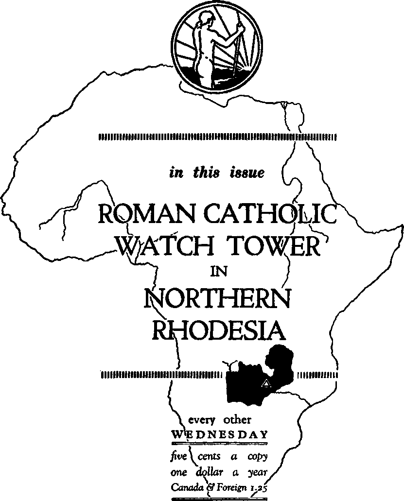

President.
A JOURNAL OF FACT HOPE AND COURAGE
Vol. XVII-No. 425 January 1, 1936
**t*<e)* " । ।
CONTENTS
....... ■ ■■■ I ■
An Open Letter to the
Alison Russell Commission 195
The Riiodesias—From 1936 “Year
Book ’ ’ of Jehovah’s witnesses 199
An Open Letter to Southern Rhodesia’s Prime Minister
Fascism (Catholic Action) in
Jehovah’s witnesses Falsely Blamed for Mistreatment of
Negroes in Northern Rhodesia 201
An Honest Editor in Northern
Rhodesia 202
Roman Catholic “Watch Tower” 203
Jehovah’s witnesses ’ Watch Tower 204
The Rhodesias 204
The Reverend Malcolm Moffat 204 And Now for the Report Itself 205 More About “Masterly” Moffat 205 Shock of the Tax Increases 206 The Meetings at Moffat’s Office 206 The Disturbances at Luanshya 207 The Butchery of the Natives 207 Plain Evidence of a Conspiracy 208 Must Answer to God for This 208
Northern Rhodesian Government
Government Officials Working
A Shameless Campaign of Lying 213
Phillips’ Statement of Facts 214
A Pathetic Letter from
Why World Powers Are Totter
Peace, Prosperity, Health, Life 222
Proof of Conspiracy Against
•• «xg)<-------—------—
Published every other Wednesday by
GOLDEN AGE PUBLISHING COMPANY, INC.
117 Adams Street, Brooklyn, N. Y„ U. S. A, Clayton J. Woodworth President Nathan H. Knorr Vice President
Charles E. Wagner Secretary and Treasurer
FIVE CENTS A COPY
$1 a year, United States; $1.25 to Canada and all other countries.
Notice to Subscribers
Remittances : For your own safety, remit by postal or express money order. When coin or currency is lost in the ordinary mails, there is no redress. Remittances from countries other than those named below may be made to the Brooklyn office, but only by international postal money order.
Receipt of a new or renewal subscription will be acknowledged only when requested. Notice of expiration is sent with the journal one month before subscription expires. Please renew promptly to avoid loss of copies.
Send change of address direct to us rather than to the post office. Your request should reach us at least two weeks before the date of issue with which it is to take effect. Send your old as well as the new address. Copies will not be forwarded by the post office to your new address unless extra postage is provided by you.
Published also in Bohemian, Danish, Dutch, Finnish, French, German, Greek, Japanese, Norwegian, Polish, Spanish, Swedish.
British Canadian Australasian South African
Entered as second-class
Offices for Other Countries .
34 Craven Terrace, London, W. 2, England
40 Irwin Avenue, Toronto 5. Ontario, Canada
7 Beresford Road, Strathfield, N. S. W., Australia Boston House, Cape Town. South Africa matter at Brooklyn, N. Y., under the Act of March 3, 1879.
Volume XVII Brooklyn, N. Y., Wednesday, January 1, 1936 Number 425
WATCH TOWER BIBLE & TRACT SOCIETY Incorporated for the Promotion of the Interest of Jehovah’s
Kingdom
124 Columbia Heights, Brooklyn, N. Y., U.S.A. PRESIDENT’S OFFICE
PUBLISHERS FOR PHONE MAIN 5421
INTERNATIONAL CABLE ADQBESS
BIBLE STUDENTS ‘ ‘ WATCHTOWER
ASSOCIATION BROOKLYN ’ ’
December 17 th, 1935
To the Commissioners,
The Honourable
Alison Russell.
H. F. Cartmel-Robinson.
H. L. Goodhart.
M. Moffat.
In Re: Disturbances in the Copper Belt, Northern Rhodesia.
Sirs:
A copy of your report in this matter filed with the Parliament October, 1935, 1 have examined. Because your Commission, without just cause or excuse, have so grossly misrepresented and defamed the Watch Tower Bible & Tract Society, I am compelled to call your attention to some of these things set forth in your report that the responsibility may rest where it belongs and that the people may know something of both sides.
Your oath required you to honestly ascertain and report the facts. In this you signally failed. The most charitable reason that can be assigned for you so doing is that some clergyman, acting as the willing tool of the Jesuits, that is, the secret service department of the Roman Catholic Hierarchy, wrote that part of your report concerning the Watch Tower Bible & Tract Society and the other gentlemen of the Commission permitted it to be inserted in the report.
The Watch Tower Bible & Tract Society is the corporate name of the organization which for more than sixty years has been constantly teaching the Word of Almighty God, as set forth in the Bible. Because it has taught only the truths of the Bible such truths expose the crook-195
edness of the Roman Catholic Hierarchy, and the faithless, so-called Protestant clergy, and this exposure has greatly angered the leaders of those religious organizations. Such religious leaders have misrepresented the Lord and misled the people and being unable to give any explanation of their conduct, or any answer to the truth, they have been greatly chagrined and have looked for an opportunity to blacken the names of those who teach the truth. The hearing before your Commission offered the opportunity to the Jesuits and their allies to accomplish their wicked desire to defame the name of Christ Jesus and His true followers.
Some time ago there arose in Northern Rhodesia a fanatical organization that committed many crimes. The Jesuits seized upon that as an opportunity to call that wicked movement the ‘Watchtower Movement” and thus to saddle the crimes of that fanatical organization upon the Watch Tower Bible & Tract Society. Before your Commission this matter was adroitly and subtilely handled so as to induce the Commission to make an official report against the Watch Tower Bible & Tract Society. Not one sentence of evidence was produced that even tended to show that the Watch Tower Bible & Tract Society was guilty of any wrong doing whatsoever.
The Johannesburg Sunday Times of July 1, 1934, published a statement showing that the Watch Tower Bible & Tract Society has no connection whatsoever with the fanatical ‘Watchtower Movement”. This was called to the attention of your Commission but you ignored it. Without a question of doubt the Jesuits were parties to the crimes committed by the fanatical ‘Watchtower Movement”, and then deliberately attempted to saddle those crimes onto innocent persons in order to shield themselves and to divert the attention of the people away from the truth of God’s Word.
To the end that the millions of honest people
within the British Empire, who are familiar with the Watch Tower Bible & Tract Society and its teachings, may see how public servants of the government have maligned men and misrepresented the facts, attention is here called to some of the most glaring and wrongful acts of your Commission.
In summing up your Commission (page 61 of Report) says: “The Commission find that the immediate impelling cause of the disturbance at Mufulira was the sudden bawling out by the mine police in the evening that the tax was increased all round to 15s.; and that it was the false announcement of the success of the strike at Mufulira, together with the challenge to the natives to show that they were not old women, which was the immediate impelling cause of the disturbances at Nkana and Luanshya.”
In the face of this the report of your Commission contains nine pages concerning the “Watchtower Movement”, and the Watch Tower Bible & Tract Society, without showing that the Watch Tower Bible & Tract Society had anything whatsoever to do with the mine disturbances. The man preparing that part of your report must have been a clergyman. The language thereof indicates as much. He shows either great ignorance of the Scriptures or else a deliberate misrepresentation of the Lord’s Word. Beginning at page 42 of your report mention is made of some of these things that are diametrically opposite to the truth. The facts which fully contradict the third paragraph, page 42 of the Report, are these: The Watchtower name is not derived from the prophet Habakkuk. The Watch Tower Bible & Tract Society is the corporate name of the American corporation, while the International Bible Students Association is the corporate name of the British corporation. Jehovah’s witnesses are those who have devoted themselves to making known the truth of God’s Word in obedience to His commandments and who use these corporations legitimately to carry on their work.
TEACHINGS
Only a clergyman would have so glaringly misrepresented the teachings of the Watch Tower Bible & Tract Society. Those of this Society are not looking for the second coming of Christ. On the contrary, all of its literature sets forth the fact that the second coming of Christ Jesus took place in 1914 and that from then till now a world-wide witness work is being carried on in obedience to God’s commandments before the Lord rids the earth of the Devil and his wicked rule. The Society teaches the Bible, which is the Word of God, and not the doctrines of any man. Its sole purpose, in obedience to God’s commandment, is to instruct the people as to the truth, and then the responsibility is upon them to act accordingly.
Your report quotes certain portions or parts of paragraphs from publications of the Watch Tower Bible & Tract Society, and although each one of these quotations is based wholly on the Scriptures, and couched in the language of the Scriptures, and the Scriptures are cited in the publications, yet your report carefully and studiously omits every Scriptural citation. Manifestly that was done to lead the people to believe that the quotations find no support in the Scriptures but are merely the opinion of a man. That such was the wicked purpose of the writer of that part of your report is shown by these words, which appear in the report at page 50, to wit: “The Commission need only observe on these extracts that the laws of the land to be obeyed by the Christian are those laws which are in harmony with God’s law; and the Commission are satisfied that by God’s law is meant God’s law as expounded by the Watch Tower. It is also to be observed that to find such extracts it appears to have been necessary to refer to the Watch Tower fortnightly journal for June, 1929.”
Your Commission here attempted to convey the idea that God’s law is only what the Watch Tower publications make it. You know that that is a deliberate false statement and it is characteristic of a clergyman to make such statements. If the clergyman writing that part of the report had honestly devoted himself to study God’s Word, instead of studying theology and the theories of the Roman Catholic Hierarchy, he would have been far better informed. There is no excuse, however, for this wrongful statement, as set forth in the report.
WARNING
One thing is certain, to wit, that your Commission has received the warning from God’s Word. The excerpts from the Watch Tower Bible & Tract Society publications, which are set forth in your report, and which statements are taken from the Bible, puts the Commission on notice and therefore lays upon you gentlemen responsibility to God. Your Commission had to take notice by publishing these things in your report. You thereby acknowledge that you have received the warning, that it is God’s purpose through Christ Jesus to destroy Satan and his wicked agents on the earth. “The Lord preserv-eth all them that love him; but all the wicked will he destroy.” (Psalm 145:20) “The Lord Jesus shall be revealed from heaven with his mighty angels, in flaming fire taking vengeance on them that know not God, and that obey not the gospel of our Lord Jesus Christ; who shall be punished with everlasting destruction from the presence of the Lord, and from the glory of his power.” —2 Thessalonians 1:7-9.
The fact that you did not take time to read this and like Scriptural admonitions does not relieve you of your responsibility before the Lord. Jehovah God caused His prophet Ezekiel to make a record setting forth the obligation that God has laid upon the faithful followers of Christ Jesus wherein the Lord says to them: “Hear the word at my mouth, and give them warning from me. When I say unto the wicked, Thou shalt surely die; and thou givest him not warning, nor speakest to warn the wicked from his wicked way, to save his life; the same wicked man shall die in his iniquity; but his blood will I require at thine hand. Yet if thou warn the wicked, and he turn not from his wickedness, nor from his wicked way, he shall die in his iniquity; but thou hast delivered thy soul. . . . Nevertheless, if thou warn the righteous man, that the righteous sin not, and he doth not sin, he shall surely live, because he is warned; also thou hast delivered thy soul.”
Clergymen, blind to God’s purpose, have caused you to acknowledge that you have received this warning from the Lord and you cannot now escape the responsibility to God. You will either have to support these faithless clergymen and the Devil or take your stand on the side of Jehovah God and His Kingdom. This malicious attempt on the part of the Hierarchy to blacken the name of the Lord and His faithful witnesses will act as a boomerang. This is another instance in which God has caused the wrath of selfish men to serve His purpose.
The information which Jehovah’s witnesses have obtained from the Scriptures and have published to the people, as stated by the witness Mr. De Jager, is certainly “dangerous to the things that are being done in the name of religion behind the scenes” by the faithless and hypocritical clergy. (See Report, pages 47,48.) These things are not at all dangerous to honest governments. The truth never injures honest men. “The wicked flee when no man pursueth,” hence the Hierarchy becomes frightened at the publication of the truth and seeks to destroy the publishers.
Those of the Watch Tower Bible & Tract Society are true followers of Christ Jesus. The primary purpose of Jesus’ coming to earth, as stated by Him, was to tell the truth and He commanded that all His true followers must tell the truth. (John 18:37) The truth always exposes lies and wickedness. The Jesuits delight to have witnesses of the truth charged with the crime of sedition. For that reason the Brodie case was heard in Quebec, which is ruled by the Jesuits and which the Jesuits saw to it was mentioned in your report, page 45. This is merely a circumstance to show that the Jesuits are acting in a conspiracy, and operating in every part of the earth, to destroy the publishers of the truth of God’s Word.
If Jesus were in Rhodesia today, and should repeat the words uttered by Him as recorded in the 23rd chapter of Matthew, the Roman Catholic Hierarchy would see to it that He was charged, tried and convicted of sedition on the ground that He brings “spiritual authority into disrepute”. No man has ever uttered words as strong as those of Jesus recorded in Matthew the 23rd chapter against the hypocritical clergy. The time has now come in which every person of earth must align himself either with the Devil and his clergy or with God and His King. A man had better be charged and convicted of sedition for telling the truth than to align himself with the Devil and his clergy and be for ever destroyed. Each one must make his own choice. Please read the 23rd chapter of Matthew.
I remind you that this same class of clergymen caused the arrest, trial and conviction of Jesus Christ on the false charge of seditious conspiracy. Likewise Stephen, a faithful disciple of Jesus, was wrongfully convicted and put to death on a similar charge. (Acts 7th chapter) In those cases the defendants were not only falsely charged with the crime but they were convicted upon the perjured testimony of witnesses hired by the clergy to swear lies against the defendants. You should not overlook these facts. Sedition and seditious conspiracy are the choice crimes that the Roman Catholic Hierarchy delights to lay upon innocent men and women. The charge is easily made, easily proven to the satisfaction of prejudiced hearers, and difficult to defend.
Following the death of Jesus and His apostles the Devil has caused to be formed an organization in order to deceive the people and that organization falsely and fraudulently took the name of Jesus, calling itself Jesuit, and which is the secret service department of the Roman Catholic Hierarchy, and which has adopted the policy of the Devil, who is the father of lies.— John 8:44.
Your Commission could have published a voluminous book setting forth many of the crimes committed by the Roman Catholic Hierarchy in the name of Christ. Amongst these could have been named the crime of organizing the Communists in Germany and using that organization as a camouflage to deceive the people, while the Jesuits organized and put forth the Nazis by which the government was seized and is now ruled with a mailed fist. The same crowd has been for some time attempting to seize the British government and is likewise carrying on its work in America. The Jesuits have seen to it that your report omitted reference to any of the wicked deeds committed by that organization and which deeds bear more particularly upon the disturbances in Rhodesia than probably anything else. The policy of the wicked criminal always is to saddle his crime on the innocent, that the guilty might escape. Such is clearly the attempt of the Hierarchy in the matter of the disturbances in Northern Rhodesia, at the Copper Mines.
The Roman Catholic Hierarchy has deceived the people for centuries. It becomes bolder each day. It has not deceived the Lord, of course, and it clearly appears from His Word that the end of that wicked organization that has operated in His name is at hand. As stated in Revelation 12:12, the Devil knows that he and his organization have but a short time to exist.
MARRIAGES
Your report attempts to saddle on the innocent people of the Watch Tower Bible & Tract Society “indecent practices” (page 50, paragraph 110). Such is a cruel and wicked lie. There is not a word in the publications of the Watch Tower Bible & Tract Society or anything done by the people who carry on its work, that would even tend to support this malicious charge of “indecent practices with community wives”. It is astounding that “honourable” servants of the government would permit themselves to be so used by the clergy to publish such defamatory statements. The responsibility is with your Commission to either repudiate the clergy or to stand on the side of wickedness.
“spiritual authority”
Your report at page 51, paragraph 114, says that the Watch Tower Bible & Tract Society bring “spiritual authority” into contempt. Thereby you assume that the Roman Catholic Hierarchy constitutes spiritual authority, which we deny. Spiritual authority rests in God and Christ Jesus and nowhere else, who teach that all men should obey God and Christ first. The Scriptures command honest men to follow in the footsteps of Jesus (1 Peter 2:21) and “to shun” the pathway of the wicked babblers, such as the Roman Catholic Hierarchy and their Jesuit spy agents. “Study to shew thyself approved unto God, . . . But shun profane and vain babblings; for they will increase unto more ungodliness.” (2 Timothy 2:15,16) The clergy and their hypocritical practices do not constitute spiritual authority by any means, and no man can be faithful to God and at the same time follow those false teachers.
We insist that every righteous law of the nations finds support in the law of God and that therefore all Christians should obey such laws. When laws enacted by men are directly in conflict with the law of God as set down in the Bible, then every true follower of Christ Jesus must obey God and not men. This is not the rule made by the Watch Tower Bible & Tract Society, but the rule made by the inspired witnesses of the Lord, and which is recorded as follows: “We ought to obey God rather than men.” (Acts 5:29) Jehovah’s witnesses are the most law-abiding people on earth. Not one instance is cited in your report and none could be cited showing that Jehovah’s witnesses or the Watch Tower Bible & Tract Society, either directly or indirectly, violated any law of Rhodesia or are responsible either directly or indirectly for the disturbances in the Copper Belt.
Many clergymen who operate under the name of Protestant are in fact Jesuits representing the Roman Catholic Hierarchy. It appears that to gratify the cruel hatred of the Hierarchy and its agents and allies your Commission unwittingly, to say the least, have permitted innocent men and women to be attacked and defamed.
These facts exactly fit the prophecy uttered by Jesus, and addressed to those who are His faithful followers: “If the world hate you, ye know that it hated me before it hated you. If ye were of the world, the world would love his own; but because ye are not of the world, but I have chosen you out of the world, therefore the world hateth you. Remember the word that I said unto you, The servant is not greater than his lord. If they have persecuted me, they will also persecute you; if they have kept my saying, they will keep yours also.”—John 15:18-20.
Whether you believe it or not, the fact is that the great controversy in the earth is now between the Devil and the Lord Jesus Christ, and all those who stand with the Devil will, according to God’s plain announcement in the Scriptures, be destroyed at the battle of Armageddon. (See Matthew 24:21; Revelation 19:19-21; Jeremiah 25:32-36.)
Please take what is here said and set down as the solemn protest against the unjust, uncalled-for and defamatory statements set forth in your report against true and honest followers of the Lord Jesus Christ.
Watch Tower Bible & Tract Society,
President.
WITNESSES have been beaten and imprisoned and on one occasion it was reported that a brother while still serving a jail sentence had his home broken down. The most violent opposers have been the Awemba Christian (?) people of the Catholic church and the Christian (?) people of the African Methodist Episcopal church. Following a vigorous protest that such things could happen in a British colony the law of which guarantees religious liberty the government of Northern Rhodesia at length intimated that they would no longer raise any obstacle to our establishing European control within the borders of that country. (This has been denied to us for some years.) Following our protest and prior to receipt of the government’s invitation a strike of native mine workers broke out on the Copper Belt. The government increased the native poll tax and tried to enforce it without adequate notice to the natives. An attempt was made to break the strike, and in the resulting riot firearms were used by the police and 14 natives were killed. Members of the Hierarchy and other enemies of Jehovah’s kingdom immediately saw to it that the charge was made that “agitators connected with the Watchtower movement were behind the strikers”. Of course, not one of Jehovah’s witnesses had any share either in instigating the strike or in the actual disturbances which followed. Our native brethren in many parts of both the Rhodesias were arrested and closely questioned, but in every instance were released without any charge having been brought against them. A Commission of Inquiry has been set up and, not having a jot of evidence against any of our brethren, government officials, still anxious to shift the responsibility from themselves and to make us the “scapegoat”, have been dwelling at considerable length on the ‘subversive tendency of our literature”. A European representative of the Society and several of the native service directors have given evidence before the Commission, and their evidence establishes the fact* that we had no responsibility in the matter whatsoever. Independent witnesses, such as the general manager of the Roan Antelope Copper Mine, at which mine in Luan-shya the rioting took place, have gone on record before the Commission that the strike was due to a combination of two things, namely, the increase of the poll tax and its enforcement without notice. And this is the general consensus of opinion amongst Europeans outside of governmental and missionary circles living in that country. It is an interesting fact that although natives belonging to the various denominational churches were mixed up in the strike, not a single charge has been made by government officials against one of these organizations. The press run by “big business” has also had a share in this conspiracy to work injury to Jehovah’s witnesses and to bring reproach upon the name of Jehovah; for while they gave much publicity to the evidence of government officials, they almost entirely suppressed our evidence. This conspiracy, part of the general conspiracy against Jehovah’s witnesses, will soon be fully exposed. In face of all the persecution Jehovah’s native witnesses have given an excellent account of themselves, and we are confident that there will be some amongst those humble and much despised (by some) people who will maintain their integrity to the end and thus have a share in proving Satan a liar and in the vindication of Jehovah’s name. During the past twelve months there has been a monthly average of 350 publishers. These have spent 52,131 hours publishing the good news of the Kingdom. * gee page 223, last-minute facts.
San Diego, California, December 2, 1935.
Hon. G. M. Huggins, Prime Minister, and
All Members of the Legislative Assembly of the Colony of Southern Rhodesia
Gentlemen :
The Bulawayo Chronicle of October 26, 1935, states that at the next session of your parliament bills will be introduced to suppress seditious tracts and publications. It also appears from the press that certain churches or religious organizations have requested such legislation.
Permit me to call attention to the fact that laws of this nature, made at the instance of religious organizations, have always worked great injustice to the people. The cruel and wicked Inquisition that was carried on in southern Europe and other countries for years was begun and carried on at the behest of the religious organization known as the Roman Catholic Hierarchy. The result was the greatest amount of ignorance to the people concerning God and His Word, and the most cruel punishment inflicted upon many persons unrighteously who attempted to obey God’s commandment as set forth in His Word. So black is that period of the world’s history it is well named “The Dark Ages”.
The same religious organization in modern times has builded up Fascism in Italy, Nazism in Germany, and like oppressive organizations in other countries, and which has taken away from the people the liberty of speech and thought and the right to worship Almighty God as He has commanded. The same unholy religious organization within the past few years has been attempting to get control of Great Britain and take away from that people the freedom of speech. So-called seditious laws have been recently enacted and enforced in Quebec, which is under the dominating control of the Roman Catholic Hierarchy. In several of the United States similar laws have recently been enacted at the request of the Roman Catholic Hierarchy. The overwhelming evidence is that the Roman Catholic Hierarchy is attempting to seize control of the nations of the earth and rule them by dictators. That would mean the complete end of liberty of speech and thought.
Section Three of the proposed Bill gives to the governor the exclusive right to determine 200
what publications are seditious and should be suppressed. If the governor should happen to fall under the influence of the Roman Catholic Hierarchy it is easily to be seen how dangerous that power would be in the hands of such a man. He is made the sole judge of what the people may hear or read. He is thus made an arbitrary dictator in matters pertaining to the Word of Almighty God.
All the nations of earth are now suffering woe, distress and perplexity, due to the fact that Satan and his visible agents are attempting to turn all people away from God and His Word. This Society publishes books solely for the purpose of explaining the Bible, pointing out to the people the truth as contained therein, and calling attention to God’s declaration that His kingdom under Christ is the only hope of the world. (Matthew 12:18-21) To be sure, Satan and his agents are violently opposed to the people’s knowing these truths. If the proposed legislation in Southern Rhodesia becomes law and is enforced at the behest of selfish men, it means that the natives will be denied the right of learning of God and of His kingdom, and therefore means that Southern Rhodesia joins with others their fighting against God. Do you want to take that responsibility upon yourselves and suffer what God declares in Psalm 9:17 ?
From observation and experience I am certain that the Roman Catholic Hierarchy is fathering the proposed legislation in Southern Rhodesia for the very purpose of preventing the people from learning the truth of God’s Word, as set forth in the Bible, and as explained in our publications. In the interest of truth and justice our Society therefore solemnly protests against such legislation as proposed. Your attention is called to this matter that you may be fully advised, as the Lord has commanded, before taking the step of enacting such laws.
The Roman Catholic Hierarchy has practiced wickedness for centuries, and her end Is near at hand. All who willingly support or co-operate with that wicked organization to keep the people in Ignorance of God's Word and His kingdom shall suffer the same fate that God has decreed shall be suffered by all the wicked. Will you carefully read and consider the words of God’s holy prophet as set forth In Ezekiel 3: 18-22? Do not permit yourselves to be used as instruments of God’s great enemy Satan to blind the people to the only means of salvation, namely, God’s kingdom under Christ Jesus.
The British Empire has long stood for freedom of thought and speech. Let not the subtle and wicked Influence of Rome now cause her or any of her Colonies to join with those who suppress the truth.
Most respectfully submitted.
Watch Tower Bible & Tract Society,
President.
Conspiracies of Roman Catholic and Protestant clergymen in the copper belt of Central Africa (Northern Rhodesia.) lead the British dictator there into illegal and subversive practices. Appointed to positions of public trust, they betray the people. They are then appointed to sit as judges of their own conduct. Fulsomely commending themselves, they seek a blame-bearer for murders for which they only are to blame. They finally settle on Jehovah’s witnesses, and, by a skillfully planned campaign, use The Associated Press and other newspapers of the United States, Great Britain and other countries to carry their false and malicious denunciations of the innocent to the ends of the earth.
Jehovah’s witnesses Falsely Blamed for Mistreatment of Negroes in Northern Rhodesia
AT LUANSHYA, Northern Rhodesia, in the month of May, 1935, six striking Negro copper miners were shot to death by mineowners’ police troops in the district where a native chief some years ago murdered scores of his subjects while baptizing them. He claimed to be a Watch Tower man, but was in no sense connected with the Watch Tower Bible & Tract Society, which latter Society is the instrument of Jehovah’s witnesses in the publication of the Gospel of Jehovah’s kingdom. The chief’s name, Nyiren-da, was entirely overlooked and almost forgotten by the natives and others among whom he came to be known as Mwanalesa, meaning “The Son of God”. Mwanalesa was eventually accepted as a member of the Roman Catholic organization, and died “in the faith” of Alexander Borgia, Dutch Schultz and Al Capone.
When the Negro strike resulted in many casualties attempts were made by one Captain Ward Roper, police commissioner, to shift the blame to the Watch Tower Bible & Tract Society and Jehovah’s witnesses! But the attempt was not successful, as Jehovah’s witnesses, when examined, proved that they had absolutely nothing to do with the uprising,1 as anyone familiar with tiie publications of the Watch Tower Bible & Tract Society will readily appreciate.
The London Daily Herald, commenting on the cause of the revolt, said:
The exposures of subterfuge and hypocrisy herein contained are primarily exposures of Satan the Devil and his prime minister, Gog.
These exposures Include the practical working alliance between Hubert Young and the Catholic and Protestant clergymen who co-operated with Sir William Alison Russell’s investigating commission appointed by Hubert Young, governor of the British territory of Northern Rhodesia.
For a background to the proper understanding of what follows, read the whole of Judge Rutherford’s address, “Why World Powers Are Tottering—The Remedy,” delivered at Royal Albert Hall, London, England, May 30, 1926, published In The Golden Age, July 28, 1926, pages 691-695, and reprinted In this Issue.
This fight for the right to speak and publish God-given TRUTHS without hindrance, according to British constitutional guarantee, in Northern Rhodesia is Just starting. What Judge Rutherford will say over the world-wide network of radio stations, February 23, 1936, cannot be forecast, but listen for yourself.
“It has been shown that the tax against which the Negroes revolted was not even legal, since it was imposed before it had been officially gazetted. Government officials admitted that the increased tax had meant that some of the men were having to pay double. The contrasted cases were cited of Negroes who had been jailed for shouting abuse at white men, and a white man who had not even been charged after shooting and wounding a Negro. On the other hand, official efforts to prove the rioting all the work of a ‘seditious’ Negro secret society have fallen remarkably flat.”
The London Daily Telegraph says:
‘ ‘ Europeans express sympathy with the strikers, whose increased taxation, amounting almost to a month’s wages, was sprung upon them without warning.”
Despite the certain knowledge of the British Government of Northern Rhodesia that Jehovah’s witnesses are wholly innocent of having anything to do with the native revolt, they put Jehovah’s witnesses to great expense and inconvenience and subjected them to grossly unfair treatment.
Meanwhile the misguided agents of the British Government were pleased to ignore the fact that Mwanalesa, like Dutch Schultz and Al Capone, was one of the many baptized murderers of the Roman Catholic cult. Nothing was done to investigate the effect of Roman Catholicism upon the native mind, nor the further fact that the Awembas, who are mainly under the control of the Roman Catholic Hierarchy, are the 201
fiercest of all those with whom the whites have trouble in Northern Rhodesia. That Catholic sect is carefully shielded, and even whitewashed in the official report of the British investigating Commission, Sir William Alison Russell, chairman.
P. J. de Jager, representing Jehovah’s witnesses before the British commission, said forcefully and truly:
“Nothing on earth was ever said that the Catholics have been responsible for the trouble. I charge that it is a deplorable state of affairs in the official mind to adopt such a prejudicial attitude: I say it is shocking for a Territory that is supposed to represent the high ideals of British justice and fair play. I submit that the Catholics are undoubtedly to a degree responsible. I wish to say this: we are expected to stand the test on what we stand for, and it does seem that other people can not do it, and are not expected to do it.”
De Jager also pointed out that the Bulawayo Chronicle, which is the principal newspaper circulating in Northern Rhodesia, played up in big type the wonderful work the British Government was trying to do of saddling its own errors upon innocent people, and then when De Jager gave testimony for four hours before the Royal Commission, the Bulawayo Chronicle was dumb in every sense of the word, and as cowardly as it was dumb.
The same course was followed, knowingly and willfully, by newspapers in Great Britain, America and elsewhere, when linking the Watch Tower Bible & Tract Society with the native uprisings, and in failing to give one word of the testimony presented by a representative of Jehovah’s witnesses. Why? Read the answer in a following section headed “Lies ‘Fit to Print’ as News”.
Those who stand for truth and righteousness need not expect fair treatment from the newspapers anywhere, nearly all of which are following the Devil’s policy of deceit and misrepresentation. Worshipers of Jehovah will be accused of everything, including the errors of government officials themselves. The Roman Catholic Hierarchy’s open acts of sedition, which are all gratefully accepted as pleasantries by the governments of so-called “Protestant” countries, those governments will generously overlook!
Editor Mackenzie of the Northern Rhodesia Advertiser, Ndola, Northern Rhodesia, is a real man. Although not one of Jehovah’s witnesses, he is canny Scotsman enough to see that innocent people are being made the ones blamed for governmental and ecclesiastical rascals, and that free speech is being stifled, and so he invited the people at the city of Ndola to come and see Judge Rutherford’s books, Deliverance, Prophecy, Government, Vindication I and II, Preparation, Light, Jehovah, The Watchtower, The Golden Age, and 11 booklets, now banned2. To his readers Editor Mackenzie wrote:
“Do not be afraid; come and see what all the talk is about, and form your own opinions. We are, according to some people, no longer decent, but we are in good company. Judge Russell [Sir W. Alison Russell] has had some of them [Judge Rutherford’s books] in his possession for some time and we are led to believe that His Excellency the Governor has had them at Government House. We have in this country to our knowledge twenty-one distinct sects on the teachings of Christ and the will of God. Because another with distinct beliefs and outspoken teachings comes along everything that it is possible to put in the way of its working is done; our sense of fair play is suppressed; for what ?
“A city like Paris gives the highest award it can give (in competition with others) to this Society, ‘for moral sanitation’ in religious literature. Surely there is something wrong with our trained brains. Perhaps we do not require moral cleansing in Northern Rhodesia.
“Whether we agree with Jehovah’s witnesses or not, it is plain that there is something radically wrong with the administration of this territory if the Governor of Nyasaland welcomed these people in 1933, while as Governor of Northern Rhodesia he allows them in after much hesitancy. Then after two months he requests them to leave the country without any valid reason whatsoever, and that while wrongful practices on the part of the natives of the ‘indigenous Watch Tower’, so called, were due to the fact that the Government had not allowed them into the territory before. ’ ’
This manliness on the part of the editor of the Northern Rhodesia Advertiser was and is appreciated by all Jehovah’s witnesses, and was specially appreciated by P. J. de Jager, their spokesman at Ndola, N. Rhodesia, during the two months he was kept there, 2,500 miles from home, hanging by the eyelids, answering fool questions put by jealous missionary-politicians, and prevented from doing anything else. In a letter to the editor of the Advertiser, dated September 4, he said:
“You may have noticed that the press in general has done the unfair thing to us to publish everything under huge splash headlines that our enemies have said against us, even without proof; but they have boycotted the evidence I have given because they, for some reason or other, do not want the people to know the full story. In the press Mr. Keith3 (Roman Catholic district commissioner at Ndola, and very influential with the British Government) was reported to have said that our literature is no more subversive to law and order than certain portions of the Bible. I know that if Mr. Keith and the Hierarchy he is serving had their way the Bible would get a very limited circulation in this territory.”
No honest man would hold the Sun (Baltimore, Md.) responsible for the words or acts of the Sun (New York), any more than he would think of charging the errors of the Times (New York) to the Times (London), or castigating the Post (Boston) for the mistakes of judgment made by the Post (New York). Yet that is exactly what Hubert Young, governor of Northern Rhodesia, and the Roman Catholic and Protestant missionaries collaborating with him, have actually done in the case of the Watch Tower (Brooklyn, N. Y.), and, with the able and unprincipled aid of The Associated Press, succeeded in conveying this great untruth to millions of people.
On account of this great act of treachery it becomes necessary, in this article, to differentiate between two Watch Towers, the one of which will for convenience be styled the Roman Catholic Watch Tower, while the other will be styled Jehovah’s witnesses’ Watch Tower. There is no possible accord between the two. They are as far apart as the east is from the west, and this is known far and wide among honest newspapermen.
In the Johannesburg (Transvaal) Sunday Times of July 1, 1934, Scott Lindberg, just returned from Northern Rhodesia, has a full quarter page about the former, under the heading “Religious Fanatic’s 178 Victims: Enemies Drowned During Baptism”. The article leads off with the statement:
“The so-called [Roman Catholic] Watch Tower movement, which has no connection with the Christian sect of a similar name, is again being revived in Northern Rhodesia, when it broke out in the Mwana Lesa risings. Reports have come to hand from officials that they receive no respect whatever in the villages.”
Mr. Lindberg goes on to tell how Tom Nyi-renda got hold of a copy of Foxe’s Book of Martyrs, saw how white men drowned others, and burned them at the stake, and concluded to go into the business himself. Tom changed his name to Mwana Lesa, meaning ‘The Son of God’, and struck up a partnership with Chi-wila I, king of the Lala. Mr. Lindberg says:
“Tom was then told the names of all Chiwila’s enemies. He called the headmen together and told them that he had been sent by God to cleanse the tribe of witchcraft, and that every man, woman and child must be baptized in the liver. The superstitious natives were decoyed to a place where a swift river forced its way through a winding ravine among the hills, and there, on top of a boulder in the middle of the river, stood Tom, dressed in long white robes. He told the people that God had sent him to separate the sheep from the goats. He then baptized each person by immersion in the river, with the help of Chiwila’s staunch supporters, who held their enemies under the water, with their heads upstream, until they were drowned. The people sang hymns as they stood gazing at each lifeless victim, and all night long the forest echoed the frenzied exhortations of Mwana Lesa. Having drowned twenty-two natives that night, Tom decided to cross the border and settle in the Katanga province of the Belgian Congo, where the Rhodesian authorities would not be able to get him.-”
In the Congo, Tom, who had made himself a sort of informal Roman Catholic inquisitorgeneral, did a good business. Referring to this demon in human form, Mr. Lindberg says:
‘ ‘ Bloodshed was the solution to all his troubles, and hideous spectacles were daily seen in his village. It is known that one man was put to death because he could not ransom himself for two shillings.”
Finally he was caught in Northern Rhodesia, and was tried, convicted and hanged in the Broken Hill Prison Square, in the presence of the native chiefs. Mr. Lindberg terminates his story with details of the execution, which details explain why this sometimes called “Indigenous Watch Tower Movement” of Africa is more properly called the “Roman Catholic Watch
Tower” and as such will hereafter be designated in this article:
“At the appointed hour there was a deadly silence. The prison doors were opened, and the murderers, with their arms lashed behind their backs, except Mwana Lesa, who had none to lash, were escorted out by a guard of askaris. A venerable Roman Catholic priest, with a flowing white beard, holding a crucifix, led the procession, for Tom Nyirenda had been received into the Roman Catholic Church and given absolution while in prison. Nine years have passed since Mwana Lesa was executed, but still the natives in Northern Rhodesia, Nyasaland and the Katanga province of the Congo worship his name and believe that one day he will come back to earth and lead them to some Utopia.”
Having introduced the Roman Catholic Watch Tower as above, it now seems appropriate to introduce the true Jehovah’s witnesses’ Watch Tower and the tremendous work it has been privileged to do to the honor of the heavenly Father’s name in the Dark Continent within the past year. For this purpose two selections are made from Jehovah’s witnesses’ Year Book for 1936. The first says:
Africa.- The territory here mentioned is far flung and requires a tremendous effort to be put forth by the brethren in order to carry this message to all people who desire to hear. Jehovah’s witnesses meet this condition with joyful hearts; and no burden, by the Lord’s grace, is too great for them to undertake. The Lord has greatly blessed their efforts during the year. There has been a substantial increase of the publishing of the message of the Kingdom throughout this territory. After twelve months of the fiscal year end, it is found that the total distribution of the books and booklets is, to wit, 375,281, which is an increase of more than 115,000 over the previous year. Quite a cosmopolitan population inhabits this territory. The Kingdom message has been distributed in 23 different languages, to wit: English, Afrikaans, German, Hol-landish, French, Greek, Swedish, Portuguese, Italian, Chinyanja, Xosa, Sesuto, Zulu, Chiwemba, Arabic, Gujerati, Urdu, Tamil, Telugu, Yiddish, Chinese and Japanese. The opposition grows in Africa. Like everywhere else, the Roman Catholic Hierarchy, directed from its seat of operation at Vatican City, Rome, sees to it that every possible effort .is put forth to hinder the proclamation of the truth. The increase of the work is sufficient answer to that opposition.
From the same interesting publication (which tells all about the activities of Jehovah’s witnesses everywhere, and which may be had for 50c from the publishers at 117 Adams St., Brooklyn, N.Y.) the following is taken from pages 71-74 under the title:
European witnesses resident in the Rhodesias are few in number, and, while frequently treated with contempt by snobs and others who do not know any better, have been permitted to engage in the witness work unhindered, and they have done so with regularity throughout the year. In certain parts of both countries our native brethren have had a square deal from government officials who have upheld the law of the land and given the brethren freedom to worship God in a manner agreeable to their own conscience. The Roman Catholic Hierarchy, however, is strongly represented in these lands and much willful and wicked persecution has been meted out to humble men and women whose only “crime” has been distributing the good news of and concerning the kingdom of God. Much of the trouble has arisen in the villages, which appear to have been, until the arrival of Jehovah’s witnesses, the special preserve of the Hierarchy or one or other of the denominational missions. As soon as a humble witness of Jehovah’s kingdom arrives on the scene Acts 5:14; 6:7 are re-enacted.
There now enters into this story the most reprehensible of all the persons involved, the Reverend Malcolm Moffat, supposed to be a missionary, supposed to be a minister of the gospel, but actually a politician of the lowest order.
Moffat is made known through the British Government’s official “Report of the Commission appointed to enquire into The Disturbances in the Copperbelt Northern Rhodesia”, which may be had for Is 6d direct from H. M. Stationery Office, Adastral House, Kingsway, London, W.C. 2. That report is, in many respects, the most utterly shameless publication that ever found its way into print, and brands every man that had anything to do with its preparation as, in effect, servants of the Hierarchy. This is particularly true of Malcolm Moffat; as the report itself demonstrates, and as is herein shown.
Moffat was and is the official British district officer of the Mufulira mining district, supposed to know all that is going on in his territory, and the person to arrest and imprison, or cause to be arrested and imprisoned, any who commit breaches of the peace. (Page 55) He is one of the four men sitting as a commission that drafted the foregoing “report”, and one upon whom Hubert Winthrop Young, governor of Rhodesia, leans for support.
Every reader who can spare the necessary 37c will be interested to see to what depths politicians can descend in their efforts to whitewash themselves and throw the blame upon the innocent, but if the British parliament does not investigate Moffat and his fellow investigators, then it is not doing its duty. (Do not send orders for this report to The Golden Age.) Page numbers of the report will be cited, so that all statements made herein may be checked up by the honest.
At the Mufulira Mine, where Reverend Moffat is supposed to look after the spiritual interests of the natives, there are 2,912 native employees. Of this number, 15 received 50 shillings a month. This is about $12.20. These were the highest-paid men in the place. There were 1,108 who received not more than 15 shillings a month, or about $3.65. (Page 35) The average wages paid to the natives at the three mines, Mufulira, Nkana and Luanshya, representing in all 12,971 workers, is 23 shillings 6 pence, or about $5.80, per month. This is less than Henry Ford pays his cheapest help by the day. This explains why these copper mines can run at a profit while American copper mines lie idle. The Guggenheims (American copper kings), however, need no sympathy.
Early in January, 1935, the Northern Rhodesia government decided to boost the taxes on the workers in the copper mines. Confidential telegrams were sent out to the provincial commissioners to that effect on January 11, with the directions regarding the increased taxes “that they should not be made known until specific instructions were received”. (Page 6)
On May 20,1935, when Moffat knew “the new rates of native tax” (page 11), there were 383 Europeans and 3,078 natives employed at the Mufulira mine, and it was Moffat’s specific and particular job (manifestly not appreciated by him, but serious in its consequences) to break the news to the natives that their poll tax would be increased from 12 shillings 6 pence annually to 15 shillings. (Page 6) This he did by the pudding-headed method of telling his aide-de-camp, Schaefer (the compound manager, of whom more anon), who told his head clerk, Ma-teyo Musiska; Musiska told the mine police; and the mine police, apparently not having been blessed with any wisdom, went throughout the compound shouting out that the tax had been increased. (Pages 11-13)
And now for two quotations from the Report, of which, without a reasonable doubt, Moffat was the principal author: “As will be shown later on in the report, the Commission consider that this most ill-judged proceeding is probably the cause which gave rise to all the disturbances in the three mines in succession.” (Page 13) “The Commission find that the handling of the disturbance at Mufulira by Mr. Moffat was masterly.’’ (Page 18) This admission that his work was “masterly” was signed by Moffat himself.
But wait! You haven’t heard the half of how “masterly” is Moffat, or how wonderfully, as a missionary and a district officer, he looked after the interests of the natives in his care, and of whom he was supposed to be, so to speak, a sort of ‘father in Israel’.
First is the statement that at all the mines “the District Officers were unable to have much contact with the natives in the compounds owing to their other duties”. (Page 40) Of course, in the case of Moffat, he, being a missionary, would have it on his heart to get closer to the natives in the compound at the Mufulira mine, and so:
“The Commission regret to state that at the mine compound at Mufulira the general rule of the good treatment of the natives throughout the copper belt was broken. It appeared that the compound manager was in the habit of punishing the natives under his control by boxing their ears. This boxing of the ears was by no means a casual cuff on the side of the head, but was a deliberate punishment. The offending native was made to stand and hold his head sideways in a stiff position, and then blows with the open hand on the side of the head were administered. Dr. Dunlop, who is in charge of the native hospital, stated that since his arrival on the mine in April, 1935, two natives had been admitted to the hospital suffering from damage to the ear. The first occasion was after he had been there a few days. The ear was discharging and the native said that he had been struck. The result was that his hearing would be affected. On the 15th April, Dr. Dunlop protested to the compound manager, who said he would look into the matter and see that it did not occur again. About a week later an-
Other native came in to be treated by Dr. Dunlop. The hoy said he had been struck on the ear; there was a little blood and the drum was ruptured. The effect of that would be that he would never be able to hear as well with that ear afterwards. Dr. Dunlop once more protested to the compound manager* and informed him that if it occurred again he would report it to the manager, Mr. Tailant. It did not occur again. There were other records of similar cases on the books before Dr. Dunlop arrived; but he was unable to say what were the causes of those cases. The compound records were produced and showed that 60 cases of this punishment had taken place in a year.” (Page 16)
This was “masterly” all right, but the wrong kind of master. As a missionary it was Malcolm Moffat’s plain duty to know of these facts, and to explain to these poor Negroes that this beastly, devilish, unspeakable land of punishment at the hands of Moffat’s right-hand man, B. Schaefer, was in utter violation of every word in the Bible. As their district officer it was also his business to know of these facts, and to suitably punish this compound manager, but he did neither. Probably Schaefer is a fellow member of the “church” of Dutch Schultz and Al Capone, and shielded for that reason. It is inconceivable that any even nominal Christian would do such a devilish thing.
It seems like a trifling thing to a white man to hear of native objection to an increase in their annual tax rate of but 2 shillings 6 pence, about 62c, but this increase meant to these poor Negroes, many of them, that they must give to the Government almost or quite one month’s wages every year. (Page 5) In some districts this levy was “the equivalent of 1% to 3 months’ earnings”, and, as a consequence, in 1934 “there were no less than 158,000 tax defaulters, and arrears were due for as much as three years”. (Page 5) What white man reading this has to pay in taxes up to three months of his earnings to support any so-called “government”, or would stand for it, much less than stand up to be cuffed
•Reverend Moffat’s aide-de-camp, general counselor and assistant, as learned from the Bulawayo Chronicle of August 17. This information was not readily noticeable in Moffat’s report. Further about Moffat’s right-hand man: On the witness stand he admitted that he does not believe in the education of Negroes. This makes him a good assistant to a missionary. He also admitted that he did not keep a book in which complaints might be registered, despite the fact that he knew there is a fine of £50 for failing to keep such a book. Further, as to Moffat himself: Moffat is the presiding magistrate of that district and was obviously and intentionally ignorant of the fact that no such complaint book was kept, and there is no record that any such complaint book is kept at Mufulira compound even now.
on the side of his head until his eardrums were burst?
The natives at Mufulira seem to have been remarkably gentle and patient, all things considered ; and the report admits that they were. It seems that, unlike the white, educated earboxers, “the native feels bound in honour to assist all his friends or relatives by giving them housing and food. Not only does this create a considerable crowding in accommodation, but it also causes the employed native to find that he must augment his rations by purchases of food out of his wages. This causes the allegation that wages and rations are insufficient. To a certain extent, it suits the mines to have unemployed in or near the mines as a labour reserve.” (Page 39)
When the mine police at Mufulira used their ridiculous method of announcing the new taxes it was they that stirred up the natives. The Commission says: “It is impossible to imagine any measure more calculated to create excitement and anger than this sudden bawling through the compound that the tax had been increased all round, in the middle of the year, to 15s” (page 13), yet despite that fact there was but slight cessation of work for the two days May 22 and 23, with ‘normal conditions at Mufulira completely restored May 23’. (Page 8)
The meetings of the natives at Moffat’s office May 22 were by his invitation and that of the police. They came in squads, at one time as many as 600, and they were vexed and disturbed. “No violence or disrespect, however, was shown.” Some went to work. (Page 14)
‘‘Mr. Moffat felt that the best way of keeping them quiet was in prolonged discussion. He told them he thought it would be a good plan to leave the compound and hold a meeting at his office. The natives promised to follow him and he left the compound by car and went to his office. If they had behaved in a similar manner at the office he intended to suggest another meeting at the compound. His main object was to keep them talking until they were in a better frame of mind. This meeting lasted about two hours. The natives had cooled down on the way from the compound, and they all sat down under the trees and across the road to the hospital and inside the office grounds.” (Page 14)
This is the one thing in Moffat’s record that could justify his signed statement that it was “masterly”, but it was not more than any other politician would have done under the circumstances, nor more than it was his duty to do.
Moffat is a Presbyterian, and a relative of David Livingstone, the first missionary in Rhodesia.
The disturbances at Mufulira May 22 and 23, at Nkana May 27, and at Luanshya May 29 and 30 were all the result of illegalities by the British colonial government of Northern Rhodesia. The native tax ordinance was not signed until May 20, and not published until June 1, after the disorders were all over. (Page 35) Moreover, the taxes were made retroactive to January 1. There was no way of hiding these facts, and so the Commission said:
“The Commission cannot help sympathising with the feelings of the natives when they were informed in the middle of the year that their tax had been increased retrospectively: such an action among income tax payers has been known to give rise to lively protests.” (Page 33)
But it was eager to whitewash the government, and so made the following ridiculous supplementary statement:
“The Commission do not consider the fact that the new rate of taxes was not legally imposed at the time of the disturbances can be considered a cause of the disturbances: but it is an illegality which is to be regretted.” (Page 35)
There was never at any time any real danger to the whites at Luanshya. The Report shows that at that time, May 29, there were 595 Europeans, 4,442 natives employed at that mine (page 21), but:
“It is to be observed that little or no hostility was shown by the rioters against Europeans. A number of Europeans, especially Mr. Field and Mr. Cook, assistant compound managers, Colonel Stephenson, the manager of the Native Labour Association, and Mr. Else, Mr. Soal and Mr. Stiglitz, who were engaged in driving lorries to the compound offices, were actually amongst the crowd during the attack on the compound offices. Even after the firing the rioters treated Europeans without hostility. Mr. Keith, District Commissioner, Ndola, who arrived just after the military, Mr. Field, and others, moved freely among the crowd. None of them were in any way injured. This is a remarkable testimony to the general understanding and good feeling that existed between the Europeans and the natives.” (Page 28)
The natives had many causes of provocation. While they were excited about their increased tax burdens, and the illegalities associated therewith, Walter Howell Dawson became frightened, fired a revolver and shot an innocent native youth through the shoulder, but no prosecution of Dawson took place.* (Page 31) The natives did throw some stones at the compound offices, and Superintendent Fold, of the mining company, was undignified enough and fool enough to throw stones in return. (Page 26)
The butchery of the striking workmen at Luanshya is not different from many which have occurred in the United States. Nobody was killed by the strikers, and nobody was killed but the strikers. For a miserable job of whitewashing, see page 26 of the Report, where the Commission admits that, in the case of the 6 natives killed and 22 wounded, it could not find out what rifles or ammunition were issued, how they were issued or obtained, or even who fired the first shot. As to how the ammunition got into the hands of the mine company’s killers, the official admission is that,
“It is not possible to state how the ammunition got into the possession of the police. There were two boxes of ammunition in the compound manager’s office, one of which was open. The Commission consider that it is probable that the police, who were out of control, helped themselves to the ammunition.” (Page 26)
The Commission admits that the demonstrations at Luanshya were chiefly among the Awemba-speaking tribes; that it was 1,000 of them that 'attacked’ the compound at that mine (pages 10 and 51); and that the Mbeni secret society was the somewhat reluctant agent employed and "acting on instructions” (page 56), and that the Mbeni society is pre-eminently an Awemba organization. The Awembas are “a tribe whose spiritual interests are catered for almost entirely by the Catholic ‘white fathers’ In other words, this was a pre-arranged Roman Catholic riot, typically “Jesuit”, done with die definite intention to try to use the words “Watch Tower” in a manner to injure Jehovah’s true and faithful witnesses, who do not now have and never had any connection whatsoever with Mwanalesa, his predecessors or successors, the Roman Catholic Watch Tower.
‘Captain Ward Roper, the first spokesman that tried to shift the blame from the police to Jehovah’s witnesses, “agreed with the Provincial Commissioner who suggested that if the European had been brought to trial and acquitted at that time it would have had an undesirable effect on the native mind.’’ (Cape Argus, July 29) In other words, there is no bad effect on the native mind when a European shoots an innocent.Negro, but if the European is arrested then the effect is bad. “How long, O Lord, how long?”
It is well known that the British Foreign Office is largely manned by Roman Catholics, and that it is almost impossible for a “Protestant” to get a job in it. The British Empire is thus, in a very definite manner, in the hands of the Roman Hierarchy, and there are excellent grounds for believing that the Devil used the Hierarchy, and the Hierarchy used its tools in Northern Rhodesia to try to still the voice of Jehovah God that His kingdom is here.
“The Commission observed that very little attention was paid to the education or religious instruction of the natives in the compounds” (page 60), but in Northern Rhodesia are some who love God, Jehovah’s witnesses, who wish to do His will, and were and are feeding His sheep, without money and without price. Though making the statement with an evil motive, the Commission considered it proper “that attention should be drawn to the fact that the circulation of [Jehovah’s witnesses’] Watch Tower literature has been rendered easy by there apparently being no other literature available in convenient and cheap form for natives who wish to read English”. (Page 51) In other words, Jehovah’s witnesses, at great expense and great effort, were doing for the poor people the very things that Malcolm Moffat is supposed to be doing and is not doing, and which the government of Northern Rhodesia should be doing and is not doing, being instead too busy in the exploiting of the poor blacks.
A full week after Moffat and the Northern Rhodesian government in general had finished with their blunderings with illegal taxes and shooting of unarmed strikers, at Luanshya, at three o’clock in the morning, June 5, six of Jehovah’s witnesses were arrested by three European policemen and a number of native policemen. They were taken to the police station and placed in separate cells. They were left to sleep on the cold floor, without even a blanket to cover. In their enforced absence from home their domiciles were invaded, and their correspondence and literature were seized and confiscated. After being confined in prison for three days they were released without any charge having been preferred against them. At other centers similar arrests took place, and all were released without being charged with any offense, which is conclusive proof that they committed no offense and were wholly innocent in the eyes of both God and man: but not in the eyes of Malcolm Moffat and the Commission on which he sat to judge himself and endorse his ‘masterfulness’ in starting the trouble. Sir W. Alison Russell, chairman of the Commission, had these facts brought to his attention for Jehovah’s witnesses by a letter of George R. Phillips, representing the Watch Tower Bible & Tract Society at Capetown, South Africa, but without avail.
At about this same time, at Ndola, Northern Rhodesia, a Brother Sunga, an orderly in the Government hospitals, was told that he must either cease to be one of Jehovah’s witnesses or else lose his job. (A Catholic, it is known, was at the bottom of this.) What kind of government is this? His reply to the district commissioner was that he would rather lose his employment in the hospital than refrain from serving the Most High God. He was then informed that he would be deported to his own part of the country, and if he or any others were caught giving out the message of God’s kingdom they would be persecuted. This was also brought to Chairman Russell’s attention by Mr. Phillips.
Mr. Phillips also reminded Russell that “Mwanalesa was unknown to us and never at any time had any connection or association with us. He was a Roman Catholic and died in that faith, the last rites being administered to him by a Roman Catholic priest”.
The need for a blame-bearer began to press hard upon the Northern Rhodesian government, and feelers, probably from Jesuit connections, began to be put out from Bulawayo, Southern Rhodesia, through the newspapers of Great Britain and the United States. Two of these dispatches appeared in the London Daily Telegraph a day apart, May 31 and June 1, and read in part as follows:
“The unrest in the copper mines is regarded more seriously since it was learnt that it is inspired by the notorious [Roman Catholic] ‘Watchtower’, a secret seet which has troubled the authorities for many years. The sect has called on natives to rise and seize Africa.”
“Despite their ordeal, Europeans express sympathy with the strikers, whose increased taxation, amounting almost to a month’s wages, was sprung upon them without warning. This provided easy fuel for the agitators of the [Roman Catholic] ‘Watch Tower’, a secret sect which has been calling on the natives to rise and seize Africa.”
The blacks are the most peaceable people in the world, as is proved by the fact that they have never waged a war, and have always kept within their own lands. It can be set down as morally certain that the supposed threat of the (Roman Catholic) Watch Tower, or Awemba, or Mbeni movement, as it is variously called, is all propaganda, all lies, and all intended to make as hard as possible the course of Jehovah’s witnesses, a people who obey God and are seriously and happily fulfilling the Scriptures that foretell what God’s watchmen shall do and are doing at this time. (Isaiah 52:7,8; 61:1-3; Habakkuk 2:1) The effect of such wicked propaganda of the Catholic Hierarchy’s agents and other clergymen is to bring the wrath of “Protestant” and Catholic missionaries and halfbaked government officials down upon the handful that is proclaiming the good news of God’s kingdom as the one and only hope of the world.
The next brazen feeler of the Catholic Hierarchy’s Jesuits was published in the New York Post, a member of The Associated Press. On June 19, 1935, the Post carried a Havas News Agency dispatch from Rome which reads as follows:
‘ ‘ The United States today was accused of harboring the headquarters of a secret international arms-smuggling organization that is supplying munitions to Ethiopia in preparation for a war with Italy. The charge was made by the newspaper Carriere della Sera. It is said the smuggling organization, known as ‘the [Roman Catholic] Watchtower’, had its headquarters in the United States and 400 branches throughout the world to carry on its arms trade. ’ ’
That brazen feeler from Rome seemed to be too raw even for the Devil’s own crowd, and so back to Bulawayo, with a long story in the New York Times of June 23, quoted here in part:
“The correspondent at Bulawayo, Southern Rhodesia, of the London Daily Telegraph says that the revolutionary [Roman Catholic] ‘Watch Tower’ movement began in the Transvaal in 1902, ‘when natives got hold of the doctrines of an American religious body of that name and twisted them to their own uses. It spread like wildfire, but in latter years was concentrated in Northern Rhodesia, where it culminated in 1925 in what are known as the Mwanalesa killings.’’
At length it came time to use The Associated Press, and the agent of the Catholic Hierarchy at Bulawayo, feeling quite secure, sent out a half column by that agency, published as an AP dispatch in the Detroit (Mich.) News, of June 30, 1935. Carefully avoiding the fact that Mwanalesa was a Roman Catholic, and thus betraying Jesuit origin of the dispatch, it said in part:
“Africa Fears Native Unrest. Rise of Old [Roman Catholic] ‘Watch Tower’ Sect Spreads Fanaticism Among Blacks. Bulawayo, Southern Rhodesia, June 29. (AP)—Fears of a long-dreaded uprising in Africa spurred by recent native strike riots in the copper mines near here which culminated in the killing of seven strikers and the wounding of several Europeans, are still far from quieted. White residents uneasily are eyeing the spread of the notorious [Roman Catholic] ‘watch tower’ movement, with its false but allpowerful gospel that American Negroes, hearing of the African natives’ ‘ill treatment’, are mobilizing an army and coming over to drive out white oppressors. The [Roman Catholic] ‘Watch Tower’ sect has-swamped the country with pamphlets calling on the natives to rise and seize Africa. As a result, officials have noticed a mounting disrespect bordering on insolence among the natives—danger signs for the handful of whites ruling millions of primarily savage blacks. ’ ’
The balance of the story is about Mwanalesa, his baptizings and murders, with careful avoidance of the fact that he was a Roman Catholic. This dispatch, with modifications, appeared with AP credit in many American papers, including the Beaumont (Tex.) Sunday Enterprise of July 7, 1935, and the Birmingham (Ala.) News of June 30, 1935; also, but without AP credit, in the Wichita (Kans.) Beacon of June 29,1935.
The New York Times, “child” of an avaricious Hebrew, the late Adolph Ochs, boasts that it contains “All the News That’s Fit to Print”. Honest persons know how true is that boast For the purpose of ‘reporting events without bias’ and ‘to give citizens the facts’ Ochs and his buddies reared and incorporated in 1900 “the world’s most important news service” organization, still known as The Associated Press.
On November 16 last Ochs’ New York Times, as well as the British-controlled New York Sun, Scripps-Howard’s New York World-Telegram, Hearst’s New York American, and scores of other leading and misleading newspapers in the United States and Canada were supplied by The Associated Press with a “story” sent to New York by that association’s office at London, England. In that “story” the noble work of Jehovah’s witnesses and their Watch Tower Bible & Tract Society was crudely but maliciously and falsely linked with “riots" in the copper belt of Northern Rhodesia.
Studiously prepared for The Associated Press, that “story” consisted of several disconnected passages taken from the Sir Alison Russell commission’s voluminous “report” on the Northern Rhodesian “disturbances”. Those passages evidently were cunningly chosen with a view to stirring the headline writer in every newspaper office to do his bit to advance the satanic scheme of the Catholic Hierarchy’s Jesuits and other political clergymen. Those schemers failed miserably, however; for in North America their purpose was served handsomely by only one newspaper. That one, the Hamilton (Ontario) Herald, published the Associated Press “story” (without including the AP credit mark) on its front page under a bellowing main headline seven columns wide: “BLAME CHURCH BODY FOR DEATHS.”
Hundreds of other newspapers in Canada and the United States published the same AP “story” under headlines less prominent if more vicious. In the interest of honest persons, and to preserve in original color the gossipy-old-woman tactics of The Associated Press and responsible officials of its member-newspapers, a few of those headlines are reproduced:
“Jehovah Seet Found Peril to British Colony”
New York American, November 17
“Watch Tower Group Termed Subversive”
The Star (Washington, D.C.), November 17 “Watchtower Hit by British Inquiry”
Philadelphia (Pa.) Inquirer, November 17 “Watchtower Called Subversive Agency”
Toronto (Ont.) Star, November 16
“British Attack American Sect”
The Sun (New York), November 16
“British Accuse ‘Watchtower’ of Wife-Sharing” New York World-Telegram, November 16
“Watch Tower Group Termed Subversive” The New York Times, November 17
On November 16 the general office of The Associated Press telephoned to the head office of the Watch Tower Bible & Tract Society, Brooklyn, the “story” received from London, and requested a statement. (At that time The Associated Press had already flashed that “story” to its member-newspapers, some of which were already printing it.) On November 18 an AP messenger, sent as required to the Watch Tower Society’s Brooklyn office, was supplied with a statement and notice addressed to the AP general manager, as follows:
. . You are hereby tendered the opportunity (1) To inform yourselves of facts set forth in the official record of hearings and of findings of the British governmental agencies that investigated ‘the Watch Tower movement’ in Northern Rhodesia; and (2) to prepare a true report of the essential facts; and (3) to send a copy of such report to each newspaper that received from you all or any part of your aforesaid dispatch of November 16, 1935; and thereafter (4) to send a certified copy of such report to us within ninety (90) days from the date of this statement and notice.”
A copy of that statement and notice was given to the managing editor of each of several newspapers, including The Sun (New York) and the New York Times and American; also the London (Ontario) Free Press. That Canadian paper’s managing editor, Arthur R. Ford, promptly wrote the Watch Tower Bible & Tract Society that “when the Associated Press submits us a correction we will be glad to publish the same”. Dare the ‘unchanging’ AP do that?
Let the reader of this article judge whether those papers ought to prepare and publish a correction based upon facts set forth in this issue of The Golden Age, a copy of which will in due time reach the desk of the managing editor of each of those papers, as well as of the general manager of The Associated Press.
Incidentally, readers of newspapers and magazines throughout the British Isles, in South Africa, and in other sections of the British empire, have been made victims of the Catholic Hierarchy’s scheme to vilify Jehovah’s witnesses and the Watch Tower Bible & Tract Society. During last November the British press bulged with selected quotations from and comments upon the Northern Rhodesian commission’s “report”. In due time all honest persons will know THE TRUTH which the cowardly press, in furtherance of the Roman Hierarchy’s wicked scheme, has tried to hide from the people, even as Nero, after setting fire to Rome, fixed blame for the city’s destruction upon innocent followers of Jehovah’s Son, Jesus Christ.
Agents of the Roman Catholic Hierarchy’s Jesuits and other clergymen have persistently tried to make Northern Rhodesian officials and the public in general to see Jehovah’s witnesses as vile.
Those clergymen have tried to make it appear that the Roman Catholic Watch Tower and Jehovah’s witnesses’ Watch Tower are one and the same.
Wearied by such wicked efforts of the Hierarchy and its allies, George R. Phillips, the Watch Tower Bible & Tract Society’s secretary for South Africa, on July 1,1935, wrote the following letter to the chief secretary of the government of Northern Rhodesia, Lusaka, N. R.:
Sir:
The suggestion has been made from several quarters that ‘Watch Tower propaganda’ and ‘agitators connected with the “Watch Tower’’ movement’ were behind the recent strike on the Copper Belt. These charges are absolutely false and without foundation and are brought forward by our enemies in an attempt to discredit our work and the message of God’s kingdom which we declare. Jehovah’s witnesses, the name by which our bona fide adherents in Bhodesia and other countries throughout the world are known, had no part whatsoever either in instigating the strike or in the subsequent disturbance. W’e take no part in politics or industrial disputes and are opposed to lawlessness and violence in every shape and form.
The facts, which are doubtless already well known to you, are briefly as follows:— Having applied to you on more than one occasion, without success, to have our work established under European control in the territory under your supervision, our native adherents left more or less to their own resources have been making an honest and sincere effort to bring the work in that country into line with the way it is conducted in all parts of the earth in which the Society has representatives. In furtherance of that object and on their own initiative they convened a meeting at Lusaka on May 10 to 12 last. The subjects discussed at that conference had all reference to the Christian’s life and conduct, and the importance of serving the Lord with clean hands and pure hearts was emphasised.
Doubtless thinking that the Lusaka meeting had some connection with the Copper Belt disturbances on May 29th, C.I.D. raids upon Jehovah’s witnesses have taken place throughout Northern and Southern Bhodesia. At Luanshya six of Jehovah’s witnesses were arrested at 3: 00 a.m. on June 5th by three European policemen, and a number of native policemen. They were taken to the police station and placed in separate cells. They were then left to sleep on the cold floor without even a blanket to cover. In their absence from their homes their correspondence and literature were seized and confiscated. After being confined in prison for three days they were released without any charge having been preferred against them. While we fully appreciate the fact that it was necessary for your Government to make the fullest possible investigations as to the cause of the trouble, we submit that it was entirely unnecessary to adopt cruel and harsh methods of this kind in carrying out these inquiries. At Ndola an orderly in the government hospital was told that he must either cease to be one of Jehovah’s witnesses or else lose his job. His reply to the District Commissioner was that he would rather lose his employment in the hospital than refrain from serving the Most High God. He was then informed that he would be deported to nis own part of the country and if he or any others were caught giving out the message of God’s kingdom that they would be persecuted. Humble Christians in other parts of Northern and Southern Bhodesia are having similar experiences.
The convention of Jehovah’s witnesses at Lusaka was held on May 10 to 12. The first announcement to the natives of the increased poll tax, the real cause of the strike, was made on May 17 or 18—five days later! (See evidence of Mr. Bonfield, District Officer in charge at Luanshya, given at the inquest on the natives who were killed in the riots and as reported in the Bulawayo Chronicle of June 15.) It must be evident therefore to all honest persons that the meeting at Lusaka was not convened to consider the increased taxation or to foment trouble in connection therewith. We are advised that on May 27 and 28 the Boan Antelope (Luanshya) native mine workers held a meeting to consider the increased taxation and the decision was taken to stop work as a protest. No one of Jehovah’s witnesses even attended that meeting nor did they form part of the riotous mob on the following day when Government representatives and police came into conflict with some of the strikers. On the contrary, acting upon the counsel of the local leader they carried out the Scriptural injunctions to “seek peace and ensue it’’ and “follow peace with all men and holiness without which no man shall see the Lord’’ and remained quietly in their huts. Accordingly, instead of being instigators of the trouble, Jehovah’s witnesses were numbered amongst those who had no share in the matter whatsoever.
The false charge has been made that our literature is seditious and that we encourage people to disobey the law of the land. Nothing could be further from the truth. Such charges generally emanate from religious bodies who are antagonistic to our work and who are unable to refute the sound Scriptural doctrines contained in our literature. Unable to prevent the spread of the good news of God’s kingdom those opposed to it go to the native head men and chiefs and say that Jehovah's witnesses are dangerous people and that their work must be stopped. If the native chiefs do not take action they are threatened and told that they will lose their jobs. In this way the native chief is induced to bring charges against Jehovah’s witnesses to the District Commissioners. The District Commissioner on examining these charges invariably is forced to acknowledge that he “finds no fault in this man except concerning the law of his God’’ and the case is dismissed. It sometimes happens, however, and increasingly of late, that the D. C. either imprisons the witness or authorizes the native chief jo mete out whatever punishment he sees fit and Jehovah’s witnesses are “thrown to the lions”. Instances are now on record of Jehovah’s witnesses’ having been dismissed from their employment, deported, beaten and imprisoned because of their faithfulness in serving the Lord. In spite of this persecution their spirit remains unbroken and their faith in God unshaken. The fact that Jehovah’s witnesses are willing to suffer imprisonment rather than be forced to join the Boman Catholic or other church organization should be sufficient testimony that it is useless trying to coeree them against their will. They would rather die than be unfaithful to the God of heaven, whom they serve. It is on record that God’s faithful prophets of old were persecuted to death upon the false charge of sedition, because they spoke the truth of God’s Word. Jesus was falsely charged and wrongfully convicted of the crime of sedition because He spoke the truth which was considered by the rulers as inciting the people against the government. It was the clergy of that time who called a council to determine how they might destroy Jesus, and the high priest on that occasion used these words (John 11: 47-51): ‘If we let this man Jesus alone all men will believe on him. . . . Consider that it is expedient for US that one man should die.’ That was a conspiracy to commit murder. Thereafter, at the instance of the clergy, Jesus was charged with sedition and put to death. The faithful apostles were likewise charged with sedition, because they told the truth. (Acts 5: 28) Jehovah’s witnesses are commanded by the Lord to tell the truth of and concerning His righteous government, and because they do so in obedience to that commandment they are charged with crime and imprisoned.
Not only are Jehovah’s witnesses carrying forward their work in obedience to the divine law, the highest authority, but the law of Bhodesia guarantees religious liberty to all the inhabitants of that territory. We quote from the law as follows: “The government shall not in any way interfere with the religion of any class or tribe of the peoples of the territory or of any of the inhabitants thereof except so far as may be necessary in the interests of humanity, and all forms of religious ordinances may be exercised within the said territory and no hindrances shall be offered thereto except as aforesaid. ’ ’ The work of Jehovah’s witnesses, namely, giving instruction in the Scriptures and bearing testimony to the incoming Kingdom of Jehovah God is in the best interests of humanity. The real law-breakers in the Bhodesias today are not Jehovah’s witnesses, but those who pass resolutions embodying false charges against Jehovah’s witnesses and who then forward these to the Government with the purpose of inciting the Government or its representatives to prevent Jehovah’s witnesses worshiping God in their own way and thus to suppress the work of bearing testimony to the Kingdom of God. Probably influenced to some extent by religious advisers Native and District Commissioners frequently employ speech of this kind: “We do not want the Watch Tower teachings in this country. There are the Boman Catholics, Dutch Beformed, Wesleyans, etc. You ought to join one of these churches.” Surely that is an effort to interfere with the religion of some of the inhabitants of the country. We therefore call upon you to take the necessary steps to see that this unnecessary persecution is brought to a stop and that Jehovah’s witnesses are given freedom to worship Almighty God according to the dictates of their own conscience.
The Director for Native Education for Northern Rhodesia in a recent report suggested that European control of our work was necessary, and that it was unfortunate that there were no Europeans in Northern Rhodesia with any responsible authority. Our European members in Rhodesia, as you know, are not permitted even to communicate with the colored witnesses. May we respectfully remind you of our last previous application to establish European control, which was sent to you under date of September 20, 1934. In an official reply from your office under date of September 25, 1934, we were assured that the matter was receiving attention, and we hope to have some word from you at an early date.
We submit that we alone are in the position to control the work and to adequately care for the interests of our sincere and bona fide adherents. We have already given you the unqualified assurance that we will not countenance, nor have any association with those who cause disturbance and that we are opposed to Ethiopianism. We are still willing to establish European control in both the Rhodesias and to send representatives who would give all their time to such work, and we sincerely trust that you will now make this possible.
In conclusion we would again remind you that our work in South Africa has been carried on amongst all sections of the population for the past twenty-five years and there is no evidence whatsoever that our literature is proving harmful to those who read it nor that it is causing disaffection between the races. On the other hand, we receive many letters every day testifying to the help and saving enlightenment received. In Nyasaland too, where the European population is considerably less than in the Rhodesias, the Government has permitted us to establish European control and the work is moving forward in an orderly way in that land. We trust therefore that a further consideration of our offer will be favorably entertained by your Government.
For Watch Tower Bible & Tract Society, Geo. R. Phillips,
Secretary, South African Branch.
Phillips’ letter (as above) seemed to be the signal for the Northern Rhodesian government to get busy and try to fix the blame entirely upon the innocent and let the guilty go scot-free. This appears in dispatches published in the Cape Town (South Africa) Cape Argus, July 27, 1935. Notice the clever way in which the Bulawayo correspondent entirely dodges the Roman Catholic Watch Tower and seeks to pin the blame upon Jehovah’s witnesses’ Watch Tower. Not one reader in ten thousand familiar with the Watch Tower Bible & Tract Society’s work would ever know the depths of crookedness back of the following:
“Mischievous and Subversive. Copper Belt Officials and Watch Tower Movement. Bulawayo, Friday. References to the Watch Tower Society’s Movement among the natives of Northern Rhodesia were made by witnesses heard at Ndola today by the commission of enquiry into copper belt riots. Captain Ward-Roper, Commissioner of Police, produced several Watch Tower Society publications in native and English. Some had been taken from natives in Northern Rhodesia. He drew attention to certain passages which he said were couched in particularly mischievous words. He considered they would have a subversive effect and bring Europeans into contempt. Mr. Goodall, the Provincial Commissioner at Ndola, said he regarded the movement as more serious today because it was organized.”
Now, after all that has gone before in this article, wouldn’t that get you ? Could you think of anything more shameless? Well, it started with that, and has kept up ever since, only the Commission and its Catholic and Protestant guides have insisted in dragging it deeper and ever deeper into the mire of absolute falsehood, treachery, dishonesty and lying such as have few times disgraced any governmental body anywhere.
In the same paper a witness in the hearings testified that “he had the impression that the stone-throwing [at Luanshya] was mostly done by the unemployed and youths”, thus confirming the need of the Government’s finding a blamebearer devoid of worldly influence. They definitely planned to do that very thing, and did.
In harmony with his letter to the secretary of the Northern Rhodesian government, Mr. Phillips, representing the Watch Tower Bible & Tract Society, sent P. J. de Jager to Northern Rhodesia as European representative. His duty was to counsel the companies of Jehovah’s witnesses and direct their efforts to serve Jehovah God by putting out the literature of Jehovah’s kingdom. De Jager had been there before and knew just what to do, but the chief secretary of the government wrote for a substitute, “some more senior member of the Society’s staff.” De Jager is 42 years of age and has been fifteen years publisher in the work. Manifestly this was all insincere faultfinding. In the same letter the government secretary said: “The position has become more acute and may compel this government to resort to severer measures, which they are anxious to avoid if harmony can be achieved by conciliatory action.”
The conciliatory action they desired was, manifestly, that somebody should go up there and say that the Roman Catholic Watch Tower of the murderer Mwanalesa and Jehovah’s witnesses’ Watch Tower are one and the same, which nobody will ever do. On July 25, 1935, Phillips wrote to Sir W. Alison Russell, chairman of the Commission, going over the same ground already covered in his letter to the secretary of the government. None of those responsible for subsequent outrages and injustices can ever claim that they did not know.
The London Times, in its issue of July 30, said regarding the disorder at Luanshya: “No fighting was originally intended, but the natives objected to the manner in which they were taken to the compound office, thinking that the police were taking them to work?’ This makes the bungling murders at Luanshya all the more indefensible and made it still more necessary for the Northern Rhodesia gang to find somebody on whom to “pin the bug”.
A report from Mr. Phillips under date of August 22, addressed to Judge Rutherford, says, in part:
“The press has been giving much publicity to the evidence of government officials who have been working overtime in an effort to make us the ‘scapegoat’. Although they haven’t one iota of evidence that any of Jehovah’s witnesses were implicated, doubtless inspired by the [Roman Catholic] Hierarchy, they are blaming the literature for having a subversive effect, bringing all authority into ridicule and contempt and lowering the respect of the native for the white man. . . . The director at Ndola will give evidence on the 26th inst. He was thrown out of his job as hospital orderly on account of his association with us. We have now got proof that it was a Catholic who was responsible for that act.”
Of course; who else would do such a thing?
De Jager was finally accepted by the government of Northern Rhodesia as the accredited representative of Jehovah’s witnesses’ Watch Tower Society. Then he was told that before he could do the work he was sent to do he must explain 155 extracts from Jehovah’s witnesses’ Watch Tower publications. This was a big job, entirely unnecessary, entirely dictatorial, entirely foolish, and entirely hypocritical. The books speak for themselves and are in every corner of the earth doing their healing and salutary work. As soon as this job was finished, the Government secretary sent an air mail letter to Phillips asking that De Jager be recalled immediately. Nothing could have been more unfair.5
Though the “masterly” Malcolm Moffat and other members of the Sir W. Alison Russell
*Why was this done, in view of the fact that not one charge of any kind was ever laid to Jehovah’s witnesses, or could be so laid? Was any such questioning ever put up to the Boman Catholic priest that baptized the murderer Mwanalesa? This query is all the more appropriate in view of the open teaching of the Roman Catholic Hierarchy of their desire and intention to murder all “Protestants” when they get strong enough.— See Truth: Shall It Be Suppressed? page 61.
Commission, and the governor Hubert Young, and the secretary of the Northern Rhodesian government, Charles Dundas, and everybody else of any consequence in Northern Rhodesia, knew perfectly well to the contrary, it suited Moffat and his confreres to include in their report nine pages carefully planned to do all possible to bring Jehovah’s witnesses’ Watch Tower into disrepute by blending it with the Roman Catholic Watch Tower of Mwanalesa. If there was ever a more clever or more devilish conspiracy,5 name it.
Those ten pages start off with the headline “Watch Tower Movement”, by which the Northern Rhodesia resident understands is meant Mwanalesa’s gang, the Roman Catholic Watch Tower.
Then Judge Rutherford’s name is mentioned three times, as president of Watch Tower Bible & Tract Society, Peoples Pulpit Association and International Bible Students Association. Thus the confusion is complete, and intentional, and malicious, and devilish, and unquestionably is the work of Moffat, done with sectarian venom.
How is the ordinary Rhodesian reader to know what is meant by the following sentence: “Jehovah’s witnesses attend Watch Tower meetings and correspond with the headquarters of the Watch Tower in Cape Town: and they are regarded by the native population as leaders of the Watch Tower”?
In order to understand that sentence, in the connection in which it is used, it is absolutely necessary to insert the words “Jehovah’s witnesses” before the words ‘Watch Tower”, in each instance, to express the truth.
But what Moffat and his gang desired to have the people think is that Mwanalesa’s murderous Roman Catholic Watch Tower “converts” are acceptable comrades of Jehovah’s witnesses and in contact with the Watch Tower Bible & Tract Society, which Moffat and all the others with him knew full well was a lie, and which makes them one and all, Russell, Cartmel-Robinson, Goodhart, Moffat, Young, and Hudson, seem contemptible in the eyes of the just.
It was then only necessary for the liars to add a few more choice morsels, such as paragraph 110, page 50, to finish the job. Referring to the Roman Catholic Watch Tower, but intending the people to think of Jehovah’s witnesses’ Watch Tower, the paragraph begins:
“The Watch Tower in Northern Rhodesia has developed indecent practices, such as community of wives among the faithful and the provision of deaconesses for the use of travelling teachers.”
Without a reasonable doubt God Almighty will hold accountable every man connected with the preparation of that false, malicious Report.
Phillips’ Statement of Facts
Cape Town, October 2, 1935. Chief Secretary,
Government of Northern Bhodesia, Lusaka, N. E. By Air Mail
Sir:
Your letter of the 23rd September is at hand.
In view of the correspondence that has recently passed between your Government and this Society we are at a complete loss to understand why His Excellency should now desire to hold in abeyance his previous decision that a permanent representative of the Society should reside at Lusaka and be recognized by the Government.
In your letter of June 24th you acknowledged that our application to establish European control of our work within that territory had been under the careful consideration of your Government for the past three years and that the Government would now raise no objection to any such move which might be conducive to the better supervision and control of our adherents in that country. Obviously that decision was made after very mature consideration of the whole situation and the Government must have been fully satisfied that such an arrangement would be in the best interests of all concerned.
I immediately replied under date of July 3rd making certain proposals to you. These included the sending of Mr. de Jager to visit the various centres at which we have adherents. The purpose of such visit was to be twofold, namely, (1) to establish contact between the various European and Native Authorities and our local representative at such centres that the latter might be identified and officially recognized and (2) to take whatever steps were found necessary for the proper instruction and guidance of our members. Following such visit he was to make a report to us whereupon we would send someone to permanently control the work with headquarters at Lusaka. These proposals were duly accepted by you under date of July 22nd. In that letter you wrote “this Government is quite prepared to accept your assurances of the intention of the Society and is willing that you should send a representative to report to you with a view to subsequent establishment of a depot at Lusaka. ” In a further communication from you under date of August 13th you intimated to us that His Excellency had accepted Mr. de Jager as the accredited representative of the Society and again confirmed the arrangement of his rendering a report regarding the activities of our adherents in Northern Bhodesia.
In your letter now under reply you state that “The Commission of Inquiry having now concluded its sittings, Mr. de Jager’s continued stay in the territory would seem unnecessary ’ ’ and you suggest that he be recalled immediately. I have to respectfully remind you, however, of the fact borne out by the aforementioned correspondence that Mr. de Jager was not sent to Northern Bhodesia primarily to appear before the Commission. He was sent up by us to visit the various centres at which we have adherents and then to make report to us and he was accepted by your Government as our representative to do that work. So confident have we been from the outset that our bona fide adherents (Jehovah’s witnesses) and the literature distributed by them were in no way implicated in or responsible for the recent rioting and disturbance on the Copper Belt that we did not think that it would be necessary for any of our members even to appear before or give evidence to the Commission. It was not until we learned from the Press that an elfort was going to be made to make us “the scapegoat” that the necessary arrangements were made to protect the Society’s interests. By that time arrangements had already been completed for Mr. de Jager to undertake the first part of our proposals to you and he was in fact on the point of leaving for Northern Bhodesia when we made our application to give evidence before the Commission. His appearing at the Commission was therefore only incidental to the main purpose of his visit. The fact that the Commission has now concluded its hearings is no reason, therefore, for us to withdraw Mr. de Jager. Necessary work in connection with the Commission and the preparation of a report on 155 extracts taken from certain of our publications, and which report Mr. de Jager was called upon to make by His Excellency, have kept him fully occupied during the past two months so that he is only now in the position to begin the work for which he was sent by us in the first instance to perform. The delay is regretted by us, as we had hoped that Mr. de Jager would have completed the work for which he was sent to Northern Bhodesia and that the depot would have been opened by this time. I think you will agree, however, in view of what is written above that the delay is not our fault nor has it been due to any tardiness on the part of Mr. de Jager. His very exhaustive statement running to 100 pages and which contains the representations he was called upon to make by His Excellency on certain extracts from our literature is not only a testimony to his industry during the past few weeks, but the statement contains abundant proof that no reasonable objection ean be made to the contents of the Society’s literature but that, on the contrary, the message of and concerning the Kingdom of God embodied therein is one of the greatest importance and necessity for all people living on the earth at this time. The manner in which Jehovah’s witnesses conducted themselves during the recent disturbances is proof conclusive of the wholesome effect our literature has had on our native adherents in Northern Bhodesia. What our literature has done for our own members in Northern Bhodesia and other parts of the earth it would also do for any others who made a study of it under our supervision. Had all the natives in that country been under the influence of our teaching there never would have been a strike and the lot of your Government would be a much easier one than it apparently is today.
I respectfully submit that the evidence led before the Commission has not in any way weakened our position. On the other hand, it has been strengthened very considerably. As you are doubtless aware no one of Jehovah’s witnesses has been found guilty of having a share in the disturbances. Furthermore, while the suggestion has been made by several Government witnesses that our literature has a subversive tendency, no proof has been forthcoming to that effect. No evidence has been led that any of those implicated in the trouble were in any way influenced by our literature. On the other hand, thosle who were chiefly responsible gave evidence to the effect that they were not only not Connected with us but in fact opposed to us and that our literature did not circulate amongst them. A careful examination of all the Commission’s papers by our Counsel, Mr. Cyril Lloyd, confirmed these statements. Extracts from our literature are now on the official record proving that our teachings are not subversive to constituted authority but that on the other hand the Christian is enjoined to pay the tax that is levied to cover Governmental expenses and indeed to obey each and every law of the land, the only exception being where any law made is in direct conflict with the law of God, which law we recognise as supreme. Our literature goes further and definitely counters the idea of using violent methods to remedy that which may be considered unreasonable or unjust, and all are exhorted to wait patiently for the establishment of God’s Kingdom, which alone can bring relief from the present unsatisfactory conditions which exist in every part of the earth today.
Your statement to the effect that Mr. de Jager has not proven to be an acceptable representative of the Society is noted, but you do not give any adequate reason in support. If Mr. de Jager has violated the law of the land or been guilty of ungentlemanly conduct or dene anything to bring reproach upon the name of Jehovah God or the good name of the Society we would recall him immediately, but I respectfully submit that, having regard to the correspondence that has passed between us, unless some such charge supported by reliable evidence can be brought against him, there is no occasion for us to withdraw him until he carries out the work for which he was sent to Northern Rhodesia.
When Mr. de Jager left for Northern Rhodesia two months ago we advised all our native adherents in that territory of your Government’s decision to permit us to establish European control and that a European representative of the Society would shortly visit them. That announcement was received with acclamation, and from Livingstone in the South to the mining areas in the North and from Mongu in the West to Fort Jameson in the East enquiries are coming in as to when he is coming along. For years now they have wondered why it has been possible for other religious bodies to have European control and why such privilege should be denied them. Now their hopes are about to be realised and with longing eyes they watch the road that leads to Lusaka. They have a keen desire to do only that which is right and to lead lives that will be worthy of the gospel, and, above all, freedom to worship God. They need help which we alone can give. They have suffered much on account of the actions of the indigenous so-called 'Watchtower’ movement. The difference between Jehovah’s witnesses and that native movement has been made clear at various centres in Northern Rhodesia, and wherever the distinction is appreciated the interests of Jehovah’s witnesses have been protected. Incidentally the stock of the so-called ‘Watchtower’ movement has depreciated very considerably. European supervision will complete the good work begun and sound the death knell of the indigenous native movement which has been using our name. I respectfully submit therefore that it would be unwise and unfair to even temporarily delay putting into effect the Government’s previously expressed decision to grant us European control. To expedite matters I would therefore propose the following for the favourable consideration of His
Excellency, namely, that we send our European representative whom we wish to take permanent control of the work in that land, Mr. L. V. Phillips, to Lusaka immediately to open an office there. Mr. L. V. Phillips has had considerable experience in the Society’s work both in field service and in several branch offices. During the past five years he has been in the Society’s office here at Cape Town and has dealt with practically all of the Rhodesian correspondence during that period of time. Mr. Phillips is therefore thoroughly conversant with the situation in Northern Rhodesia and is familiar not only with the names of our native members who have been in touch with us but has gleaned much valuable information from correspondence received at the office which will be of great help to him in his work of supervision. Before coming to this country Mr. Phillips had experience in the British Branch office, of the Society in London.
Mr. de Jager will meanwhile proceed to complete the work he was sent up there to do and to which you have already given approval. I think you will agree that there is a definite advantage in having the depot established at Lusaka while such a tour is being made by Mr. de Jager, for part of the necessary instruction he will require to impart is that our members throughout that country should now look and write to Lusaka for guidance and not to Cape Town.
If His Excellency is agreeable to this proposal that we open the depot immediately, and the conduct of our members in the mining areas alone justifies us fully in such action, Mr. Phillips would take control from the time of his arrival in that country and Mr. de Jager would be subject to his direction. In the earnest hope that you will honour the statement made in your letter of June 24th to raise no objection to any proposal made by us which will be conducive to the better supervision and control of our adherents in that territory, I remain, Sir,
Yours respectfully,
For Watch Tower Bible & Tract Society, G. R. Phillips,
Secretary, South African Branch.
No. Rhodesia.
17.10.35.
Dear Brethren,
Having sent you this letter in sorrow and lamentations, all the literature and letters which you sent us from August 20, 1935, to September 3, had been hidden by the master of the charge office and the native commission here at Mongu Lealui, and on 11th October, 1935, they called me to be at their office for our six parcels and after being there they made a great quarrel with me for the books and booklets, they said to me these books and booklets ought not to be sent to you, we shall throw them into fire, because we got power now to take off all the books which are in the hands of all the Watch Tower people.
They said from this day if we shall see you or some of your brethren passing in this country with these books and booklets and putting them in the hands of the people we shall put great and cruel persecution upon you and throw you in the prison about two years unless when you buy license of £7.10.0 we shall let you going on about this country with these books and booklets and putting them in the hands of the people. But I myself tried to refuse hardly in all these words of temptation. After speaking all those words of temptation to me, they chose three kinds of books for themselves from our parcels and said to me, “These three kinds of books are of ourselves; we shall never give them to you, and we shall throw them into the fire.”
The kinds of books which are in the hand of the enemy with their names are these, Jehovah, Who Shall Rule the World} and The Crisis. The three kinds of all these books have been taken from our parcels without any one left to us.
This is the trouble which is here for the Lord’s sake, “and Saul was consenting unto his death. And at that time there was a great persecution against the church which was at Jerusalem; they were all scattered abroad throughout the regions of Judeea and Samaria, except the apostles.”
Chief Yeta and the Government meet each other in putting cruel persecution upon Jehovah's witnesses here at Mongu Lealui. The name of the master’s charge office who kept the parcels of our books for throwing them into fire, is this: Mr. Wallace, herewith his address, Mr. Wallace Care the Charge office, P.O. Mongu Lealui, N. Rhodesia.
I wrote that Tetter while I am in the prison of Chief Yeta. In this prison of Chief Yeta we are forced to do the very hard work of digging up the ground, making the very deep trenches, and carrying the very heavy loads upon our shoulders; we have been made the very slaves of slaves under his feet.
Kindly tell us the place where our European brother who is now here at Northern Rhodesia is, with his address also, because since he came in Northern Rhodesia we have not heard the very place he is, and you may send him a letter reminding him all these troubles which are taking place here at Mongu Lealui.
And we have now received a gramophone and its records. We received it to the end of September, 1935, and therefore we are very thankful, but it reached here while I am in the jail
Kindly tell us if there are 9 records translated into Sesuto language, because this is the language which we try to understand. And wishing you to send us more literature translated into Sesuto language, and those English kinds which are confiscated by Mr. Wallace here at Mongu Lealui. The Crisis, Who Shall Rule the World? and Jehovah, you may send them down here again.
With fondest Christian love,
Your little brother in bonds for His sake, (Signed) S. J---- M----.
This ends the Rhodesian story. What do you think of It, you liberty-loving Britishers? Are you now more afraid of the pope than you are of God? Did not the pope connive with Italy to attack Ethiopia, the Devil hoping thua to cause Britain to destroy God’s remnant (Revelation 12:17), leaving Rome master of the world?
(Text of an address by Judge Rutherford at Royal Albert Hall, London, England, Sunday, May 30, 1926)
IN THE councils of the learned rulers of the world the burning questions are: “Why do the nations continue in distress and perplexity? What remedy can be applied that will stabilize the world?”
More than seven years have passed since the signing of the Armistice which marked the end of the World War, and yet there are today more tangible evidences of the disruption and dissolution of the nations than ever before. There is good reason for this. There is a sure and certain remedy. The rulers of the world are respectfully requested to give candid consideration to the argument here submitted in support of the assigned reasons and the announced remedy. The seriousness of the situation warrants such candid consideration.
The governing factors of the present world powers claim that their rule of the peoples is by divine right and authority, and therefore they have committed themselves to the divine law; and by this they should be governed and judged. This being true, then I need make no excuse for using the Bible as a basis for my argument.
I propose to now prove that the trouble of this world has resulted because: (1) The law of Jehovah God has been disregarded and ignored; (2) and that throughout the ages world powers have been organized and succeeded each other and have now reached a climax in the British Empire; (3) that in all of these world powers fraud has been freely practiced in the name of religion and in the name of the Almighty God, and that the clergy have been the agency chiefly used in the practicing of such fraud; (4) that the time has come when Almighty God will make himself known to the people, and will express His indignation against all hypocrisy; (5) that to this end Jehovah God has set His anointed King upon His throne of authority and judgment; (6) that the kingdom of God is the complete remedy for all human ills, and that there is none other; and (7) that the rulers of the earth should now hear and heed these facts. In the consideration of these important questions a brief reference to the history of man, in the light of divine prophecy, is essential.
Jehovah, the Eternal One, the Creator of heaven and earth, is the only true and living God. In Him reside all rightful power and authority. He created man perfect and clothed him with authority to inhabit and rule the earth. (Genesis 1:26, 27; Isaiah 45:12,18) He assigned His son Lucifer as man’s overlord, thereby establishing a confidential relationship between Lucifer and Jehovah, and charged Lucifer with a sacred duty toward man. Becoming ambitious to be like the Most High God, Lucifer betrayed his sacred trust and induced man to violate God’s law. By this means man was alienated from Jehovah. (Genesis 3:1-5,15-24) Thereupon Jehovah changed the name of Lucifer to that of Dragon, Satan, Serpent, and Devil, which names bespeak his evil disposition.— Revelation 20:1-3; Isaiah 14:12-15.
God expelled man from Eden, and permitted him to work out his own devices in an attempt to establish self-government. He did not deprive Satan of the authority as man’s overlord, nor did He interfere with Satan’s influencing of man. Jehovah placed before man His way of truth and righteousness, and left man free to exercise his own will either to obey the true God or to take the wrong way and yield to the influence of Satan, the evil god.
Early in their experiences men began to organize into bodies politic. Satan easily overreached men by introducing fraud and deceit. In mockery of Jehovah the adversary early induced men to call themselves by the name of the Lord; while at the same time, in truth and in fact, they were the instruments and subjects of the Devil. Thus hypocrisy was first introduced. (Genesis 4:26, margin) It is easy to see that hypocrisy has been practiced during the entire period of man’s history.
God Forgotten
The first great world power organized by man was ancient Egypt. Its invisible ruler, or god, was Satan the Devil. In that land were domiciled the Israelites, whom God chose for His own people and whom He used to foreshadow His future purposes. He organized His people into a nation and commanded that they should have Him as their God, and none other. (Exodus 20:4) The Israelites were oppressed by the governing factors of Egypt. God sent Moses to deliver His people from the oppressive hand of the tyrannical ruler of that world power.
At that time Jehovah made a great demonstration of His power by overthrowing the
Egyptian world power; and He declared that He did so that the people might not forget, to their own hurt, that Jehovah is the true God. (2 Samuel 7:23) Moses foreshadowed the great Messiah, the anointed King of Jehovah. In the overthrow of the Egyptians and the deliverance of the Israelites, God foreshadowed the ultimate deliverance of the oppressed peoples of earth from the wicked hand of Satan and his world powers, by which the people have long been held in subjection.
In the course of time the Israelites yielded to the wicked influence of Satan the Devil, and their nation fell. With the fall of Israel Satan became the god, or invisible ruler, of all the nations of the earth and is therefore designated in the Word of Jehovah as “the god of this world”. (2 Corinthians 4:3,4) But with the overthrow of Israel God declared that He would in His own due time send His anointed King with full power and authority to act, and that He then would rule the world in righteousness. —Ezekiel 21:24-27.
World powers have been organized by men, with Satan as invisible ruler or overlord. To accomplish his purposes in keeping man under his control Satan has always resorted to deceit; and by this means he has overreached and controlled the world powers that have existed in all the ages, past and present.
A world power is an organization formed and operated for the purpose of ruling the peoples. Seven great world powers have existed, in the order named, to.wit: Egypt, Assyria, Babylon, Medo-Persia, Greece, Rome, and the British Empire. The governing factors of each and every one of these world powers have been three, to wit: the commercial, political and religious elements. The god or invisible ruler of each has been Satan the Devil, even as the Scriptures declare. (2 Corinthians 4:3,4; John 12:31) When Rome adopted Christianity as her religion she was there hypocritically calling herself by the name of the Lord; but in truth and in fact she continued to be the representative of the Devil, even as was done in the day of Enos.—Genesis 4: 26, margin.
All of these world powers are indicated by Jehovah in His Word and each one of them is designated by the Lord God under the symbol of “beast”. (Daniel 7:3) The evident reason for this is that all of these world powers have been harsh, ferocious and oppressive. The commercial element is cold, calculating, military and harsh. The political element is suave, diplomatic and faithless. The religious element is, and always has been, sanctimonious, hypocritical, fraudulent and seductive. All of these reflect the disposition of their invisible ruler, Satan the Devil. In keeping with divine prophecy, these world powers have even designated themselves under the symbol of “beast”. The British Empire has adopted the lion as its symbol.
Without question the greatest world power that has ever existed is the British Empire. The boast is truly made that “the sun never sets on her domains”. During the period of her existence education, science and invention have surpassed that of all other times. In finance she leads. In military strength she is at the head. In the exercise of political diplomacy she has no equal. Her clergymen are the acknowledged leaders of the ecclesiastical world.
The claim is made for the British Empire, as has been done for other world powers, that she rules by divine right and authority. The British Empire, together with other nations, claims to form “Christendom”, or Christ’s kingdom on earth. Therefore, these call themselves by the name of the Lord. But the law of Jehovah God is ignored and His name brought into disrepute.
Because Britain is the greatest of all world powers, because she together with her allies claims to be “Christendom” and to be ruling by divine right and authority, there rests upon the British Empire a grave responsibility which cannot be evaded. Because the British world power is the very center and bulwark of the world’s civilization, which the Lord symbolizes as a “beast”, and because London is its seat of government, and these governing factors claim to rule by divine right, here then is the very “seat of the beast”.
The fall of the British Empire means the breaking up of the world’s civilization. Her learned rulers must see that her very pillars are now tottering to the fall. All the other nations of earth, moved by the dread of impending disaster are, together with the British Empire, arming for another and a more terrible conflict than has ever before been fought. For this reason the attention of the rulers is here earnestly directed to the divine prophecy relating to the powers of this world and to the kingdom of God now in course of fulfillment
And now I charge that the British world power, the head of so-called “Christendom”, while claiming to rule by divine right and authority has openly repudiated the great Jehovah God and has rejected His anointed King, and that her clergy are chiefly responsible for this great wrong. Because of the rejection of God’s duly anointed King the world’s greatest trouble is impending and about to fall.
Everlasting Kingdom
Prominently set forth in the Word of Jehovah is His purpose to set up His kingdom of righteousness, with His anointed Son, the Messiah, as the King. By the mouth of His holy prophet Jehovah describes the beastly world powers or kingdoms, of which the British world power is the seventh; foretells their warring with each other; and then He declares, “And in the days of these kings shall the God of heaven set up a kingdom, which shall never be destroyed: and the kingdom shall not be left to other people, but it shall break in pieces and consume all these kingdoms, and it shall stand for ever.”—Daniel 2:44.
This prophecy relates to the kingdom foretold by all the holy prophets of Jehovah. This is the kingdom for which Jesus taught His followers to pray, “Thy kingdom come; thy will be done on earth as in heaven.” This is the kingdom which the clergy of all denominations, in all times past, have declared would come at some future time. Now God himself has given conclusive proof, which proof is available for all mankind, and particularly for the rulers, that His due time has come; and He now calls upon the rulers of the earth to recognize and render allegiance and obedience to His anointed King whom He has set upon His throne.—Psalm 2:2-12.
Jesus taught that He would return and set up the kingdom of Jehovah. For nineteen centuries His faithful followers have anxiously waited for that time to come. Before Jesus departed from the earth the question was propounded to Him by His faithful disciples: “When shall these things come to pass, and what shall the proof of thy presence be and of the end of the world?” (Matthew 24:3) The Lord Jesus, as the mouthpiece of Jehovah God, speaking prophetically and with authority, answered that the time would be marked by the fact that the nations and kingdoms of the earth would become angry, and that then there would be a great world war, followed shortly by famines, pestilences, earthquakes, and revolutions; and that these things would be the beginning of sorrows upon the nations and kingdoms of the earth.—Matthew 24: 7-18; Revelation 11:17,18.
In 1914, exactly the due time as foretold by the prophet of God, this great trouble began upon the nations and kingdoms of “Christendom”. The Lord God there furnished, to the governing powers of the earth particularly, the clear evidence that the world had ended, and that the time for the beginning of His kingdom of righteousness had arrived. The ecclesiastical element of the world powers were duty-bound to take notice of this evidence and to call it to the attention of their allies, the commercial and political elements.
As a further evidence of the time above mentioned, the Lord declared that the nations would then be in perplexity and distress, and that men’s hearts would be failing them for fear; and surely there is not one amongst all of the governing factors of earth today but that recognizes the fulfillment of this prophecy. (Luke 21: 25) The British in the trades strike not yet settled are having much distress and perplexity.
The second coming of the Lord Jesus Christ, and the establishment of His kingdom under God’s anointed King, has been the hope of Christians for nineteen hundred years. This great truth has not been hid under a bushel. It has been proclaimed from the housetops throughout the earth.
For the purpose of establishing the fact that the clergy of the greatest world power, to wit, the British Empire, have recognized the divinely provided evidence as proof of the Lord’s second coming and of the establishment of His kingdom, I now read into the record a statement which was published by the London press in the latter part of 1917, and which was republished by other papers throughout the Empire and throughout the entire world:
The following manifesto was recently issued by a number of England’s most noted ministers:
“First.—That the present crisis points toward the close of the times of the Gentiles.
“Second.—That the revelation of the Lord may be expected at any moment, when He will be manifested as evidently as to His disciples on the evening of His resurrection.
“Third.—That the completed church will be translated to be ‘for ever with the Lord’.
“Fourth.—That Israel will be restored to its own land in unbelief, and be afterward converted by the appearance of Christ on its behalf.
“Fifth.—That all human schemes of reconstruction must be subsidiary to the second coming of our Lord, because all nations will be subject to His rule.
“Sixth.—That under the reign of Christ there will be a further great effusion of the Holy Spirit on all flesh.
‘ ‘ Seventh.—T h a t the truths embodied in this statement are of the utmost practical value in determining Christian character and action with reference to the pressing problems of the hour. ’ ’
This remarkable statement was signed by A. C. Dixon and F. B. Meyer, Baptists; George Campbell Morgan and Alfred Byrd, Congregationalists; William Fuller Gouch, Presbyterian; H. Webb Peploe, J. Stuart Holden, Episcopalians; Dinsdale T. Young, Methodist.
These are well-known names, and are among the world’s greatest preachers. That these eminent men, of different denominations, should feel called upon to issue such a stat e-ment is of itself exceedingly significant.
In this manifesto the divinely-provided proof was brought home to the greatest world power by her own ministers, that divine prophecy has been fulfilled as to the end of the world and the second presence of the Lord. But has due heed been given to this divine proof ? It has not been heeded. On the contrary, these very distinguished mon who signed this manifesto have since vehemently spoken against present truth and the Lord’s kingdom. Furthermore, the rulers of the world have ignored the divinely provided testimony, as is shown by what has followed.
With propriety these questions may here be asked: If these governments of earth are operated by divine right and authority, then why should God permit the devastating World War to come upon them? If the British world power, together with other nations, constitutes Christ’s kingdom, which claim is made by reason of their calling themselves “Christendom”, then why should the Lord permit the destruction of His own kingdom? It is obvious from the correct answer to these questions that the claim that these world powers rule by divine right and authority is false, fraudulent and blasphemous.
Satan, the god of this evil world, seeing that his governing factors on earth were weakening each other, sought means to cement the people and the rulers in a closer compact. During the World War he caused an appeal to be made to the patriotism of the common people, by having them adopt the slogan: “The War will make the world safe for Democracy.” The purpose was to gain for the military the support of the democratic element of the people. God, through
His prophet, had foretold that this very thing would take place.—Daniel 2: 41.
When the war ceased the grave and wise men of the world powers assembled at Paris for conference. There the rulers took counsel together, which counsel resulted in bringing forth a compact against Jehovah and against His anointed King. Necessarily Satan, the god of this world, would know the purpose of Jehovah in establishing His kingdom; and therefore Satan set about to produce something to offset that kingdom, whereby to turn the minds of the rulers away from it and away from God. To do this he must again resort to fraud and deceit.
The commercial and political elements, constituting the military of the world powers, in substance said: “To stabilize the world we must have a compact of nations, in which all nations shall agree that our council shall govern and control them.” The result was the formation of the League of Nations. Notwithstanding the claim that these world powers rule by divine right and authority, the name of neither Jehovah nor His anointed Son was even mentioned in the League of Nations compact. But in order to lend a sacred tinge thereto, and that the people might befurther deceived, Satan, through the clergy element of the world powers, in sanctimonious phrase declared the League of Nations to be “the political expression of God's kingdom on earth”. Notwithstanding that the clear proof had been given to them by the Lord that the world had ended and that the second presence of Christ had begun and that special attention had been directed thereto by leading clergymen of the world, the Federal Council of Churches of the world endorsed the League of Nations as a substitute for the kingdom of God. This august body of ecclesiastics in January, 1919, issued the following blasphemous proclamation:
The time has come to organize the world for truth, right, justice and humanity. To this end, as Christians, we urge the establishment of a League of Free Nations at the coming Peace Conference. Such a league is not merely a peace expedient; it is rather the political expression of the kingdom of God on earth. The League of Nations is rooted in the gospel. Like the gospel, its objective is “Peace on earth, good will toward men.” Like the gospel, its appeal is universal.
The heroic dead will have died in vain unless out of victory shall come a new heaven and a new earth, wherein dwelleth righteousness.—2 Peter 3: 13.
The church [nominal] can give a spirit of good will, without which no League of Nations can endure.
These distinguished ecclesiastics, contrary to the teachings of the Prince of Peace, whom they claim to represent, and in direct violation of His law, preached men into the trenches and hailed the World War as a means of making the world safe for democracy. Thereby they deceived the young men and sent them to untimely graves. (Jeremiah 2: 34) And then after the war they completely repudiated the Lord God by openly allying themselves with and endorsing the Devil’s substitute for God’s kingdom.
The League of Nations is against God and His anointed. In it is nothing but darkness. Its approval by the clergymen, as a substitute for Messiah’s kingdom, has caused gross darkness to settle down upon the peoples of the world. (Isaiah 60: 2) No longer can the people look to the clergymen as safe leaders. Their leadership is done.— Psalm 82:1-5.
God foretold the seven world powrers, to wit, Egypt, Assyria, Babylon, Medo-Persia, Greece, Rome and the British Empire, and also foretold that out of the seven wmuld grow the eighth. The latter is also symbolized as a “beast”, because its purpose is to rule and control the peoples of the earth. The Lord foretold its birth, its short existence, and its everlasting end.—Revelation 17:10,11; Isaiah 8: 9,10.
The governing factors of the world powers, particularly the ecclesiastical element, by reason of claiming that these world powers rule by divine right and authority, thereby admit that the Word of God is true. Therefore they must be judged by the Word and are estopped from denying the Scriptural proofs which disclose their wrongful acts. No one will attempt to deny that the British world power is the earthly agency that was responsible for the formation of the League of Nations compact. The British Empire is the very bulwark thereof. Let Britain withdraw and there will be no League of Nations.
But who is primarily responsible for the League of Nations compact? Is it formed and does it exist by divine right and authority? I answer, No. The Devil is its father, the British Empire is its mother, and the other nations which support it are its wet nurses. At this time the advocates of the League of Nations are desperately striving to unite its belligerent members. With fear and trembling they see that unholy offspring of Satan headed for perdition, even as the Lord foretold.—Revelation 17:8.
The Devil caused the governing factors of so-called “Christendom” to enter into this compact against Jehovah and His anointed King and thereby in fulfillment of prophecy to say in effect: “Let us refuse to give our allegiance and support to Jehovah and His King, but rather let us cast them away from us and hold to our present evil organization.”
Hear now, if you please, the inspired words of God’s holy prophet which were written three thousand years ago, written to apply at this very time, and which do apply at this hour:
‘Wherefore have nations consented together? or should peoples keep muttering an empty thing? The kings of earth take their stand, and grave men have sat in conclave together, against Jehovah and against His Anointed One, saying, ‘Let us tear apart their bands, and cast away from us their cords!’ One enthroned in the heavens will laugh, my Sovereign Lord will mock at them; then will he speak to them in his anger, and in his wrath will dismay them: —‘Yet I have installed my king on Zion, my holy mountain, let him tell my decree!’ Jehovah said to me:—‘My Son art thou, I to-day have begotten thee: Ask of me, and let me give nations for thine inheritance, and as thy possession the ends of the earth: thou shalt shepherd them with a sceptre of iron, as a potter’s vessel shalt thou dash them in pieces.’ ”—Psalm 2:1-9, Rotherham.
But in order that those who have been inveigled into the Devil’s trap might see their mistake and repent and escape, God further says to them through His prophet: “Now therefore, ye kings, show your prudence, be admonished, ye judges of earth: serve ye Jehovah with reverence, and exult with trembling. Kiss the Son, lest he be angry, and ye perish on the way; for soon might be kindled his anger. How happy are all who take refuge in Him!”—Psalm 2: 10-12, Rotherham.
The clergy are the most reprehensible of all the elements that go to make up the governing powers of the world. Claiming to be teachers of the Word of God, their duty was to ascertain the truth and explain it to the others. But instead, they have caused the rulers of earth to commit fornication with an apostate church system, and have made the peoples drunk with their false doctrines. (Revelation 18:3) The commercial and political rulers admit the ecclesiastics to their councils, with the evident thought that their piety and sanctimoniousness will remove the curse from their own skirts; but now they see that these ecclesiastics have practiced a fraud upon them because they are not in truth and in fact the representatives of God as they have claimed. Even now the ecclesiastics are hated by the other rulers, and soon this hatred will be manifested in a more tangible manner. —Revelation 17:16,17.
The real reason for earth’s trouble is, because the rulers have rejected God’s duly anointed King and refused His kingdom, and since they persist in this course of defiance against God, He has declared that He will dash them to pieces as a potter’s vessel. (Psalm 2:9) In corroboration of this, God’s prophet further says: “Thus saith the Lord of hosts, Behold, evil shall go forth from nation to nation, and a great whirlwind shall be raised up from the coasts of the earth. And the slain of the Lord shall be at that day from one end of the earth even unto the other end of the earth: they shall not be lamented, neither gathered, nor buried: they shall be dung upon the ground. Howl, ye shepherds, and cry; and wallow yourselves in the ashes, ye principal of the flock: for the days of your slaughter and of your dispersions are accomplished; and ye shall fall like a pleasant vessel. And the shepherds shall have no way to flee, nor the principal of the flock to escape. A voice of the cry of the shepherds, and an howling of the principal of the flock, shall be heard: for the Lord hath spoiled their pasture. And the peaceable habitations are cut down because of the fierce anger of the Lord?’—Jeremiah 25:32-37.
No ruler can give a satisfactory answer as to why the World War suddenly stopped in 1918. But God’s Word explains that the reason it ceased at that time was that an opportunity might be given to the rulers, as well as to the people, to hear the testimony concerning the Lord and His kingdom. Men failing to take heed to this, the Lord Jesus declares that there shall follow a time of trouble such as the world has never known, and that this shall be the last trouble of earth.—Matthew 24: 21,22.
All the nations and kingdoms of earth are rapidly marching to the great battle of God Almighty. This will convince the peoples, as well as the rulers, that Jehovah is God and that Jesus Christ is the King of kings and Lord of lords.
What men desire is a righteous government, one that will guarantee to them peace, prosperity, health, life, liberty and happiness. From the beginning it was God’s purpose that man should enjoy these blessings everlastingly. Because of sin man lost the right to all of them. God then began to work out His purpose of redemption and deliverance for man. He promised to redeem man from death and from the power of the grave. (Hosea 13:14) In due time He sent His beloved Son Jesus into the world, to redeem the world. (John 3:16; 10:10; Matthew 20: 28) The death and resurrection of Jesus provided redemption for all, and in God’s due time all mankind who obey shall have the benefit thereof. —Hebrews 2:9; 1 Timothy 2: 3-6.
God promised that Jesus Christ, His beloved Son, should come again and restore to men all things that had been lost. (Acts 3:19, 20) Now the time has arrived: Christ has come as God’s anointed King, Jehovah has set Him upon His holy throne to rule and now commands all to give allegiance to His King and kingdom. (Psalm 2:1-11) Let the rulers of the earth now take heed to Jehovah’s Word, accept His anointed King, and lend their power and influence to turning the minds of the people away from the Devil and to Jehovah God and to earth’s rightful King. Thus doing, they will employ their powers and faculties in the interest of peace and righteousness. Messiah’s kingdom now at hand will bring the desire of every honest heart.
There can be no lasting peace without a righteous government. God promised that His King shall reign in righteousness and His representatives with justice. (Isaiah 32:1) Upon the righteous shoulder of the Prince of Peace shall that government rest, and the peace thereof shall never end. (Isaiah 9: 6,7) No more shall the people be afflicted with war, nor be burdened with taxation for the preparation for war, nor shall they even have fear of such.—Isaiah 2: 2-4.
Under the present world powers a few people have an abundance, many must skimp in order to eat and be clothed, while many others are objects of charity. Such will not be the conditions under God’s anointed King, whom He has now placed upon His throne. In this kingdom “shall the Lord of hosts make unto all people a feast of fat things”. (Isaiah 25:6) Every man then will enjoy the fruits of his labor and dwell in happiness with those whom he loves.
All the efforts put forth by the world powers cannot bring health to the people. No one now has perfect health. But be of good courage! Under the righteous King all who are obedient to His reign will be made well. God has promised to cure them and to bring them health, to the end that no more shall the inhabitants say: “I am sick.”—Jeremiah 33: 6; Isaiah 33: 24.
The first lie told by Satan was: “There is no death.” Long experience has proved to man how great was that falsehood. God gave man life. God took away the right to life, because of man’s disobedience. Jehovah God alone can provide life for the human race. He has made provision for the obedient ones to have life through Christ Jesus, and thereby it is written: “This is life eternal that they might know thee, the only true God, and Jesus Christ whom thou hast sent.”
All the world powers are the offspring of Satan. These can never bring life to man. God’s kingdom through Christ Jesus is now at hand, and those who render themselves in obedience to this kingdom shall live and shall not die. God’s Word declares that Christ Jesus comes to judge the living and the dead. (2 Timothy 4:1) The living shall first be given an opportunity, then all who are in their graves shall come forth, and those who keep the law of God shall never see death. (John 5:29; 8:51; 11: 26) God’s kingdom is here. Therefore with confidence it can be announced that millions NOW LIVING WILL NEVER DIE!
God made the earth for man’s habitation. (Isaiah 45:12,18) The earth shall be the eternal home of [obedient] man. The reign of Christ will destroy all of man’s enemies, the chiefest amongst which is death. (1 Corinthians 15: 25, 26) Satan himself shall eventually be destroyed and there shall be no more death.— Hebrews 2:14; Revelation 21:1-6.
With a righteous government functioning for man's good; with lasting peace on earth and good will toward men; with all the people enjoying health, and with no fear of sickness and death; with all families being united together and dwelling in peace, the human race will enjoy eternal happiness.
Let the kings and rulers of the earth now give their allegiance and devotion to the Lord. Let them acknowledge Jehovah as God, and Christ Jesus as His anointed King; and thus doing they will render a real service to the people and put themselves in line for the eternal blessings of Jehovah.
Proof of Conspiracy Against the Innocent
Y AIR mail of Secretary Phillips to London;
thence to San Diego, California, to Judge
Rutherford; thence to Brooklyn, N. Y., by air mail (all in 30 days) comes the last-minute news that the ordinance banning Judge Rutherford’s books in Northern Rhodesia became law before the Copper Belt riots took place, which is proof conclusive not only of the innocence of Jehovah’s witnesses of any connection whatever with those disturbances, but gravely implicates the Northern Rhodesia Government itself with guilty connection with the whole affair. Is that government taking orders from the Roman Catholic Hierarchy’s “white fathers”? Those clergymen serve the savage Awembas of Northern Rhodesia. They teach those natives to worship and serve men and images of men and women, and to ignore the written commands of Almighty God in His Book. The Bible is kept away from the natives by the “white fathers”. Let sober-minded Britishers everywhere judge whether or not Jehovah’s witnesses shall be prevented from helping the natives and others in British colonial Africa to understand THE BIBLE.
THE GOLDEN AGE
is not a mere local magazine. Its publication in the United States does not mean it is just for Americans; but note! this issue brings you the inside truth even in regard to a distant spot from America like Rhodesia. Why? Because an important question of real world interest has been brought to the fore there.
Related matters wherever springing up, in any part of this big world, are brought to the light by The Golden Age. The purpose of The Golden Age is to bring you the truth, the undisguised facts. This magazine is not hedged in by superstitions of the Dark Ages nor of the present age of modern Inquisition. It has no monied power to fear nor political ring to please. It is a magazine for the truth, whether about Rhodesia, Australia, England, or other land. You do well to be a subscriber, as others are in every nook and cranny of this earth. Keep up with the news of Jehovah’s kingdom, the underground activities of the sneaks opposing it, and the blessing it will bring you if you take your stand on the side of that Kingdom. Subscribe now!
The Golden Age, 117 Adams St., Brooklyn, N. Y., U.S.A. ENGLAND: 34 Craven Terrace, London, W.2 S. AFRICA: 623 Boston House, Cape Town
Please put me on your list for a year’s subscription for The Gohlen Age. Enclosed find $1.00 (Canada, England, South Africa, and other countries, $1.25), which you will use in advancing the truth.
Name .............................................................................................
Street ..............................................................................................
City ...................................... State -----------------------
Please send to the address below 40 copies of Golden Age No. 425, containing the truth a' out the Rhodesian issue. Enclosed find $1.00 (Canada, England, South Africa, and other countries, $1.25) to be usvd in advancing the truth.
Name ................................................................................. -
Street ..............................................................................................
City ......................................... State________—
SEPARATING
THE NATIONS
THE people who believe God and the
Bible have for centuries expected the day to come when all nations will be separated into two distinct divisions, one of which divisions will die and the other division survive and live. The proof is now certain that such separation work has begun. The great crisis is here. The people must be warned! What are the reasons for such separation ? What power is doing the separating work? Does the separation involve religion, commerce and politics and the people in general ? What must the people of good will do in order to be on the safe side?
These and related questions will be answered by
JUDGE RUTHERFORD recognized authority on Bible prophecy and world events
in a lecture to be delivered to the public
Sunday, February 23
Shrine Auditorium, Los Angeles, California
AT THE SAME TIME THE LECTURE WILL BE broadcast by radio throughout America and transmitted by wire, radio and other electrical appliances to the ends of the earth, that the people of all nations may hear. Tell your neighbors and select in advance the radio station by which you may hear the lecture.
to tune in the most suitable station of many in the shortwave band between 11 and 50 meters.
Listen for
ORGAN TONES
that will mark the opening of this program.
U.S.A. Central Standard................ 2
U.S.A. Mountain Standard........................ 1
U.S.A. Pacific Standard....................... 12 Noon
British Isles and Europe......................... 8
South Africa__________________________-......... 10
WATCH FOR ADVERTISEMENT OF AUDITORIUM IN YOUR LOCALITY WHERE YOU CAN HEAR THIS SPEECH.
See page 223, last-minute facts.
Dominant Influences In Northern Rhodesia are: the Roman Catholic Hierarchy, in complete control of the reputedly savage Awemba tribe, and strongly represented at the city of Ndola, by Mr. Keith, district commissioner; the Presbyterian denomination, through its missionaries, on account of the fact that David Livingstone, a Presbyterian, was the first white man In these parts; the officials of the copper interests, and the strong-arm squad; all of which Interests were responsible for the murders at Luanshya. When Hubert Young, governor, had yielded to the pressure of these groups, he cravenly made a hasty trip to Nyasaland, and brought pressure to bear on the then governor In that location, with the result that the very same publications, in the very same order, were banned In that province, and one of them was a booklet that has been out of print ten years.
Mr. Keith moved freely and safely among the Boman Catholic Awembas, right after the Luanshya murders. The Awembas are the only ones definitely accused of riotous conduct. Report of the Commission, pages 3, 10, 28, 51.
There is every indication that Moffat was not wanted on the British Government’s investigating commission in the first place. The London Daily Herald, August 3, 1935, said: “The whole inquiry started with a damaging admission by the Government, which was forced to change the Committee’s personnel after missionary criticism of its impartiality.”
Moffat’s questions of De Jager were particularly malicious. Samples are: “Your object is not to bring in the kingdom of God?” “You are opposed to any agencies for the extension of Christ’s kingdom?” “Are you the only representatives of our Master?” “Have you done anything for the education and uplift of the people?” The questions were all answered with reason, candor and kindness, and without explaining that Jehovah ’s witnesses are not calculating on bringing -in the kingdom of God by pretending to be missionaries interested in the heathen, and then accepting political jobs; nor would they be silent partners in any arrangement for cuffing sixty fellow men on the sides of their heads until their eardrums burst. If that is the way Christ’s kingdom is to be extended, it will be a long time yet before men 'do unto others as they would that others should do unto them’ and when God’s will is done at Mufulira as it is done in heaven.